Inference and Training Workloads¶
Suppose some service receives an average of four requests per second, each request with 4,608 input tokens and 1,152 output tokens. Chapter 2 already explained how to compute model workload from input and output lengths. If we multiply the average workload by the request rate per second, can we determine the required resources?
Two services can have identical average request rates and average input and output lengths: one receives requests uniformly at all times, while the other spends the first minute processing long documents intensively and the second minute generating long responses intensively. The former has relatively stable resource demand across stages; the latter needs more input processing capacity or generation capacity at different times. Beyond arrival order, the round trips and waiting within a task also affect load. An agent goes back and forth between the model and tools; while waiting for a tool result, the model pauses generation, yet the context state still must be retained for subsequent calls. In training, sequence length, effective labels (tokens participating in loss computation), and update count also affect computational volume and how long state must remain resident.
Chapter 2 gave the capacity, computation, and memory access volume for a single call. This chapter adds three questions: when work arrives, which steps must wait, and what result counts as task completion. From these we build, in turn, models for queueing, state residency time, the critical path, and the cost of a successful task, then combine them to compute the cost of training and long-running services.
3.1 From a Single Request to Continuously Arriving Load¶
3.1.1 Prefill and Decode¶
Load is the set of work that arrives, waits, and executes within the system over some period of time. Let's first analyze a single request in time order. Restoring \(S\) context tokens, processing \(P\) new input tokens, and returning \(G\) tokens, the call chain consists of one prefill and \(n_d=G-1\) decode calls. Numbering the subsequent decode calls starting from \(j=0\), at the start of the \(j\)-th call the existing context is \(S+P+j\). Thus the resource requirement of each call can be computed using the methods from Chapter 2, and the ordering between calls is determined by the generation dependency.1
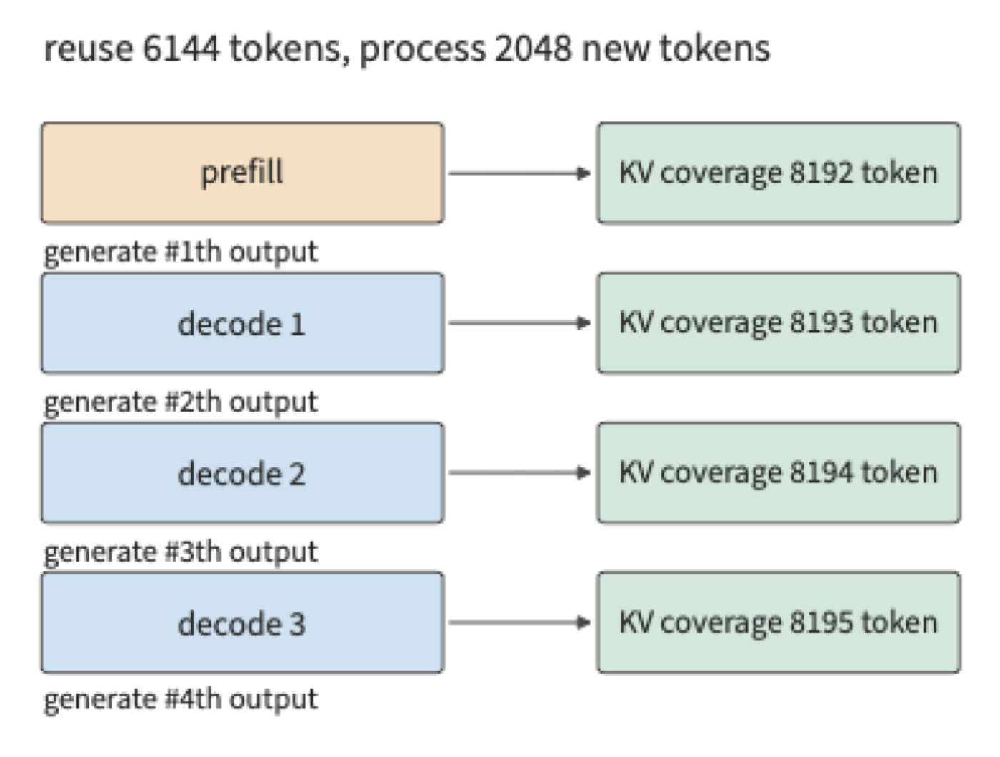
The two stages use the same set of weights but have different resource requirements. Take a set of weight matrices as an example: prefill's input contains \(BP\) rows, while a single decode step has only \(B\) rows. When there are more input tokens, the weights read in one pass can participate in more multiply-add operations; at low concurrency, decode may read an entire set of weights for just a handful of tokens. This is the origin of the statement that "prefill is typically compute-bound while decode is typically memory-bandwidth-bound."
Beyond a single request, new reuse opportunities also arise across different requests. When multiple decode calls execute simultaneously, they share the same weights while each reads its own context; when a long input arrives, prefill can process many known tokens at once, and their feature vectors form an input matrix with more rows. The serving system needs to allocate time among these differently shaped pieces of work. Simply summing the total token count loses the information about which stage each token belongs to and when it can execute.
Exercise 3-1 [Extension]: How request count changes the number of model calls given the same total output
Consider a single request that outputs 1024 tokens, versus eight requests that each output 128 tokens. Each request has an input of 1024 tokens. Find the number of prefill calls, the total number of subsequent decode steps, and the context length at the end of each request under both scenarios. Assuming the eight requests generate synchronously, compare the number of read rounds when each batch shares a single weight read, then explain why identical total output is insufficient to determine completion time.
3.1.2 Task Objectives and Evaluation Metrics¶
Model requests and user tasks are usually not in one-to-one correspondence. Answering a question may require only a single generation call, while fixing a function may require reading a file, editing code, running tests, and revising the code again based on errors. When evaluating a system, first write down what counts as completion, then decide what to measure.
First mark three events on the timeline: request arrival \(t_a\), first token returned \(t_1\), and last token returned \(t_G\). This gives
TTFT (time to first token) is the time from request arrival to the return of the first token; this book also calls it the first-chunk response. The first-chunk response measures how long it takes to begin outputting, the complete request latency measures how long it takes to finish generating, and the average token interval measures the pace of output. Shortening a given segment of time only directly changes the metrics that include that segment. For instance, reducing queueing time before a request begins executing improves TTFT, but does not automatically shorten the token interval once generation has already begun.
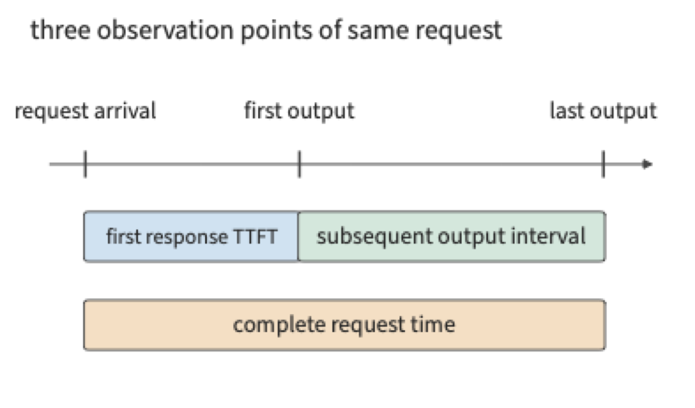
Before the first token reaches the client, a request passes through stages such as queueing, input preparation, accelerator computation, and result return, in order. Whether the input is initially stored on the host or on the accelerator determines where data transfer occurs; after computation completes, the result must still go through host processing and connection sending. By recording the start and end times of each stage for the same request, one can see where TTFT is mainly spent. Chapter 5 will expand on the specific timing of accelerator submission, transmission, and completion.
When a client receives multiple tokens in chunks, one can directly record the arrival time and token count of each chunk, then compute output pacing statistics. Reasoning models introduce an additional observation point: they generate intermediate thinking content (called thinking tokens) before producing the visible answer, so when the first internal token appears, the user may not yet see the answer. Thus internal generation, user-visible output, and task completion correspond to different points in time. The first playback of audio must additionally go through decoding and device buffering, discussed further in Section 3.3.3.
| Question to answer | Metric or record needed |
|---|---|
| How long until a response begins? | TTFT; for reasoning, also record the first useful output |
| Is the output continuous? | per-token/per-chunk interval and its distribution |
| How long until things get done? | complete request time, complete task time |
| How many qualifying tasks complete per second? | effective throughput under quality and deadline requirements |
| How much does it cost to get one successful result? | model, tool, and environment cost of all attempts / number of successful tasks |
| What is still occupied during waiting? | the request and model version the state belongs to, its size, storage location, and residency time |
Looking only at averages hides the slower portion of requests. p95 is the 95th percentile, used to describe the slower portion of the observations for the chosen metric. This chapter uses the nearest-rank method: sort \(n\) observations in ascending order and take the \(\lceil0.95n\rceil\)-th one. The p95 of four requests is the maximum value; the p95 of 480 requests is the 456th one. Sorting the times for request completion, queueing, and first-chunk response separately reveals where long waits occur; the p95 of complete requests is obtained directly by sorting each request's total elapsed time.
Besides response time, state occupancy during waiting also needs to be measured. The longer state remains resident, the fewer tasks the same capacity can serve simultaneously. Let the task state size be \(M(t)\); the integral of state occupancy over time is
Multiplying the space occupied during each time segment by its duration and summing gives the area under the curve of occupied space over time. Its unit is byte·s: 1 GiB of state occupying space continuously for 10 seconds corresponds to 10 GiB·s. The state itself has not grown, but during that time this block of space cannot be used by other requests. If tasks arrive continuously at an average rate of \(\lambda\) per second, each task occupies \(M_0\) bytes and waits on average \(\tau\) seconds, then in steady state the average occupancy from just these waiting tasks is approximately \(\lambda M_0\tau\). Tool waiting thus also becomes a capacity issue.
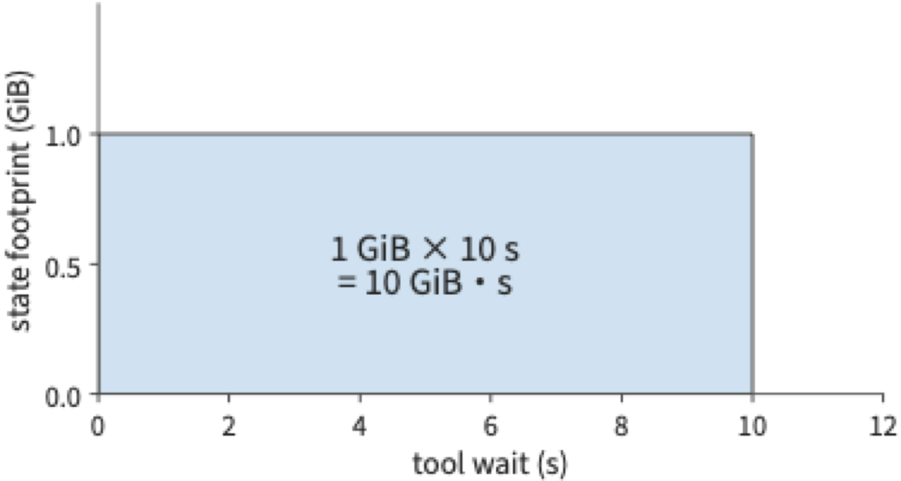
Beyond time and state, the cost of completing tasks must also be accounted for. Successful-task cost sums the cost of all attempts and divides by the number of successful tasks. In this way, failed generations, tool tests, and environment runs all enter the numerator, while the denominator corresponds to the qualifying results the user actually obtains. When a batch has zero successes, record its total consumption and failure causes; once a successful result is obtained, divide the total cost of all attempts by the number of successful tasks.2
3.1.3 Request Distribution¶
If the accelerator is idle for the first minute, then suddenly many requests requiring long generation arrive in the second minute, those later requests still must queue: the earlier idle compute time cannot be saved for later use. TTFT and output interval describe the experience of a single request; when multiple requests arrive one after another, these metrics also depend on whether the requests contend for capacity during the same time window.
A load description should preserve the joint distribution of arrival time, input length, and output length. Long requests both increase their own service time and may extend state residency; short requests that finish early may let subsequent requests start sooner. Thus, even with identical average workload, waiting time, completion time, and peak state occupancy may differ. Below, keeping the total request volume and average length from the two-minute load at the start of the chapter unchanged, we first compute how arrival order changes backlog, then examine a real system.
Real-world requests often come from different clients. One client mainly submits long documents, another mainly generates long responses; even if each client's request shape is stable, changes in the arrival rate across clients still change the overall load. ServeGen, a study of production services, observed this phenomenon and reconstructed the request distribution using client composition and time variation.3
Worked Example 3-1: If average processing capacity is sufficient, why does backlog still occur? Decode is handled by two RTX PRO 6000 Blackwell Workstation Edition cards; determine whether they can sustain the load from the start of the chapter.
Solution: Define two request types: the long-input type has 8192 input tokens and 256 output tokens; the long-output type has 1024 input tokens and 2048 output tokens. Within two minutes, 240 of each type arrive, totaling an average of four per second. In one load scenario, the two types each account for half of the requests throughout; in another, the ratio is \(9:1\) in the first minute and \(1:9\) in the second minute. The first output of each request is produced by prefill, and the number of subsequent decode steps equals the output count minus one, giving:
| Time window | New input tokens/s | Subsequent decode steps/s |
|---|---|---|
| Uniform mix | 18,432 | 4,604 |
| Time-varying, first minute | 29,900.8 | 1,736.8 |
| Time-varying, second minute | 6,963.2 | 7,471.2 |
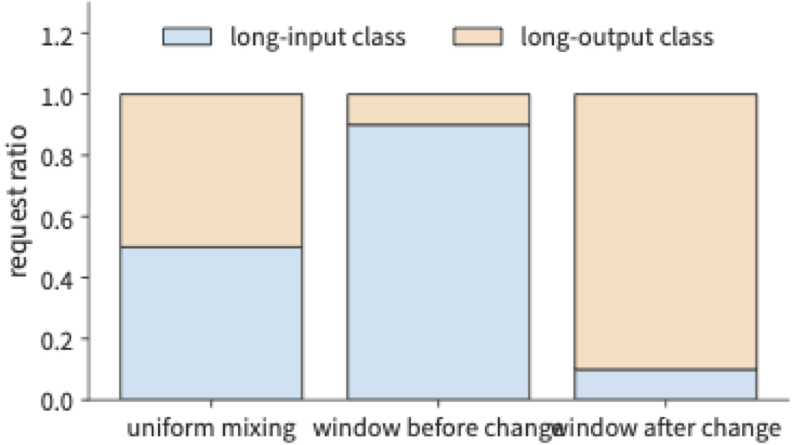
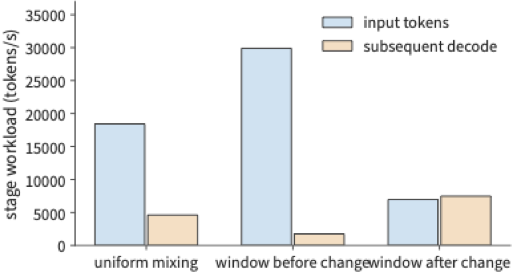
Queueing assumption: uniform arrival and fixed processing rate within a window. Using a fluid queue model, we approximate the discrete generation work as a continuous flow; arrivals are uniform within each window, the processing rate is fixed, and the initial queue is empty. The unit is one subsequent decode step of one request; prefill capacity is accounted for separately.
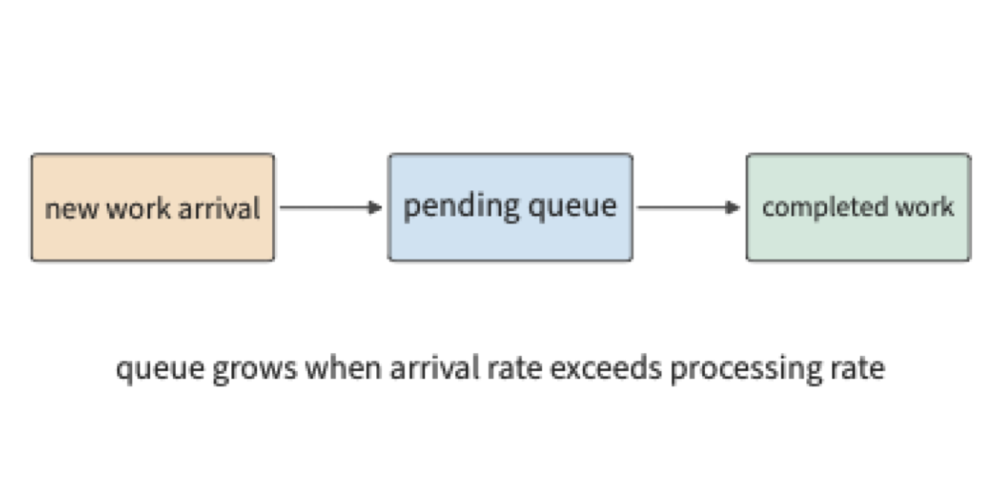
Taking the time window as the step size, backlog can be computed window by window as:
Here \(Q_k\) is the pending work at the start of the window, \(A_k\) is the newly arrived work within the window, and \(\mu_k\Delta t\) is the amount that can be completed. When the arrival rate is below the processing rate, backlog gradually decreases until the queue empties; when the arrival rate exceeds the processing rate, unfinished work carries over to the next window.
The processing rate \(\mu_k\) in the recurrence must be derived from hardware parameters. Since the first output of each of the four requests per second is produced by prefill, 4,604 of the 4,608 outputs belong to subsequent decode. Decode's processing rate is determined by memory bandwidth. The RTX PRO 6000 Blackwell Workstation Edition has 96 GB of GPU memory and 1792 GB/s of bandwidth; each card holds one full copy of Qwen3-8B BF16 weights and executes up to 64 sequences concurrently. Each decode step must read the 15.14 GB of shared weights at least once, plus read out the entire old KV of each sequence, at 144 KiB per context token. During decode, the long-input type's average context is \(8192+127=8319\) tokens, and the long-output type's is \(1024+1023=2047\) tokens; for the uniform mix, weighting by decode step, the average context is \((255\times8319+2047\times2047)/2302\approx2742\) tokens. With 64 sequences executing concurrently, one step reads and writes at least 41.02 GB, taking 22.89 ms, so one card can complete at most about 2,795.66 steps per second, and two cards about 5,591.33 steps per second. This processing rate is the physical limit permitted by memory bandwidth; the measured rate will only be lower. All three time windows use this same processing rate.
Letting the decode queue start empty, and spreading each request's generation work uniformly across windows: processing capacity is sufficient for both the uniform mix and the first minute; in the second minute, an additional \(7471.2-5591.33\approx1879.87\) steps arrive per second, leaving a backlog of about 112,792 steps after 60 seconds; after arrivals stop, it takes about \(112792/5591.33\approx20.17\) more seconds to drain. Unused capacity from the first minute cannot be saved for the second minute — this is exactly why a global average conceals backlog.4
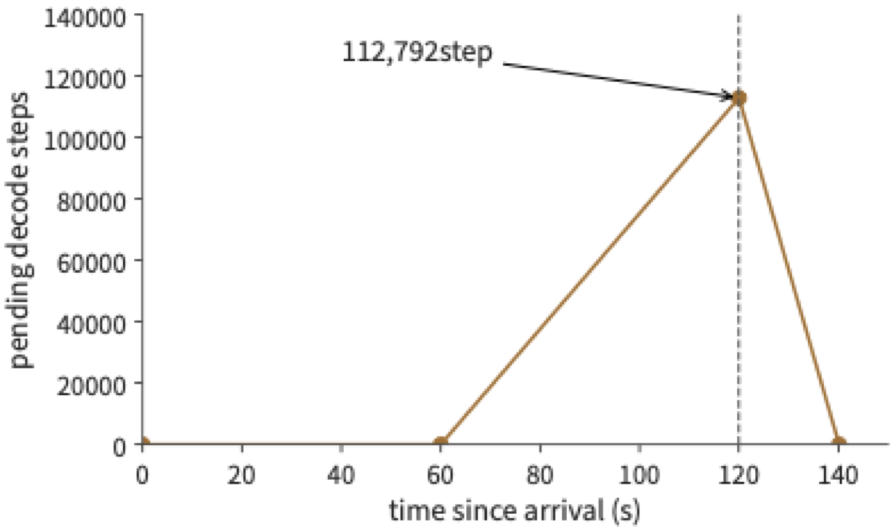
How KV capacity constraints affect queueing and first-chunk response. Running these two arrival sequences on Qwen3-8B/vLLM 0.23, we can observe how the above differences affect user waiting. The accelerator is a single RTX PRO 6000 Blackwell Workstation Edition with 96 GB of GPU memory; the KV pool is the region of GPU memory reserved specifically for request key-value context, with a capacity of 24 GiB here, executing up to 64 sequences concurrently; prefix cache refers to reusing existing KV across requests that share the same prefix, disabled here, with each request generating a specified number of tokens. When KV space runs short, the scheduler can pause an already-started request and release the KV space it occupies, then later resume or recompute it — this behavior is called preemption. Both load scenarios have 480 requests arriving within 120 seconds; the results after all requests complete are as follows.5
| Measured observation | Uniform mix | 9:1 first, 1:9 second |
|---|---|---|
| Complete request p95 | about 299.4 s | about 299.4 s |
| TTFT p95 | 242.9 s | 258.9 s |
| First scheduling wait p95 | 242.4 s | 258.4 s |
| Time from start to completion of last request | 419.8 s | 418.7 s |
| Preemption events | 62 | 24 |
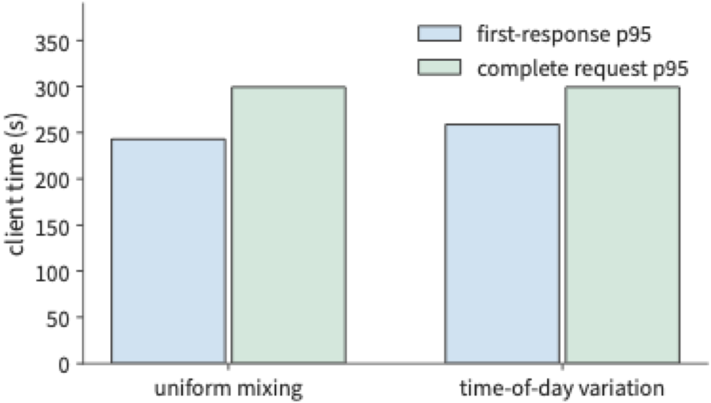
Both replays show substantial backlog, which was already foreseeable from the bandwidth lower bound in Worked Example 3-1: one card can complete at most about 2,796 decode steps per second, below the average demand of 4,604 steps per second under the uniform mix, and that same card must also perform prefill. The 480 requests together require 552,480 subsequent decode steps; this portion of work alone requires at least 197.6 seconds, while all requests have already arrived within 120 seconds.
The complete request p95 and final completion time are close between the two replays, yet TTFT and the first scheduling wait differ by about 16 seconds. Sampled records show that KV pool occupancy reached 100% in both experiments, and requests experienced long waits before entering execution. The temporal combination of input and output changed when state was released and when new requests were admitted, so even though the whole batch's completion time is close in both cases, the time at which users start receiving responses can still differ. Preemption occurring when the KV pool fills up also changes the waiting and subsequent execution order of requests.
Queueing can thus arise either from insufficient processing speed or from existing requests' state not yet being released: once the state pool fills up, new requests must wait even if some compute units are idle.6
The backlog recurrence from Worked Example 3-1 can also predict backlog under other bursty conditions. If the work arrival rate \(\lambda_w\) exceeds the processing rate \(\mu\) continuously for \(\tau\) seconds, with an initially empty queue, the backlog is \((\lambda_w-\mu)\tau\); the drain time after arrivals stop is \((\lambda_w-\mu)\tau/\mu\). Doubling the burst duration doubles both the backlog and the drain time.
Exercise 3-2 [Core]: How bursty requests and tool waiting increase backlog and state occupancy
Using the second-minute load intensity from Worked Example 3-1, i.e., 7,471.2 decode steps added per second, change this burst load's duration to 30 seconds, with decode resources of two and three RTX PRO 6000 Blackwell Workstation Edition cards respectively, each card's processing rate following the approximately 2,796 steps/second derived in Worked Example 3-1. With an initially empty queue, find how the backlog varies over these 30 seconds, and the time needed to clear the backlog after arrivals stop. Then consider another load: two tasks enter the tool-waiting stage per second, each waiting 10 seconds, during which its state occupies 1 GiB of space. Find the average number of waiting tasks and state occupancy in steady state; recompute after extending the wait to 30 seconds.
3.2 Multi-Turn Interaction and Agent Tasks¶
3.2.1 Multi-Turn Conversation and Prefix Growth¶
Section 3.1 treated each request as an independent call; in conversation and agent tasks, multiple calls of the same task are linked in sequence. The next request in a multi-turn conversation typically carries context along with it. The first turn's input includes the system prompt and the user's question; the second turn, besides the new question, may also include the previous turn's answer; each subsequent turn continues to accumulate. Looking only at how many characters the user newly typed would underestimate the input length actually fed to the model.
Let the input length of turn \(i\) be \(I_i\), and the reusable prefix length be \(K_i\); then the input that must be newly processed this turn is
Substituting \(P_i\) and \(S_i\) into the formulas from Chapter 2, projections and the FFN process only the newly added tokens, while attention still requires the new query to access the full prefix. Cache reuse thus reduces recomputation, but does not remove old context from subsequent computation.
Take a code-fixing task involving four model calls as an example to compute the benefit of caching. Across the four turns, the cumulative input is 5,297 tokens, of which 4,480 hit the cache and 817 miss. The second turn's input is 1,443 tokens, of which 1,392 hit, so only 51 uncached tokens need processing; but subsequent decode calls still need to access this context state. If every turn recomputed the entire input from scratch, the matrix operations of prefill would require 76.196 TFLOPs in total; by reusing the already-hit prefix, only 11.976 TFLOPs are needed in total. Thus cache hits both reduce recomputation of old input and require the system to continue retaining the old state.7
Modifying the context changes the length of the reusable prefix. When new content is appended at the end, the original prefix remains unchanged; when a summary replaces a section of old context, the representations after the replacement position must be recomputed from the new prefix; changes to tool definitions or templates may alter the input even earlier. These operations determine how many tokens hit the cache next turn and how many tokens re-enter prefill.
Context strategy also changes future load. Continuously appending new content at the end of the context favors reuse of the original prefix, but lets stale content continue occupying the context; replacing earlier content can shorten the context, but the cache after it may need to be rebuilt. The cost of retention, eviction, and recomputation depends on the cost of rebuilding, the state size, and the reuse interval (Chapter 8).8
Using this section's prefix-reuse relationship, compare two editing methods: appending 100 tokens at the end adds only 100 rows of new input; whereas modifying the 501st token out of 2000 existing tokens changes all representations after it, leaving at most 500 tokens of directly reusable prefix. The benefit of caching depends not just on how much text was changed, but on where the change occurs.
From the application's perspective, context is the interface for orchestrating tasks; from the system's perspective, how context is organized determines the computational volume and state residency time. Appending tool return content, replacing earlier content, and generating multiple candidate branches each change the newly added computation, the reusable prefix, and the private state, respectively. Letting the serving system understand these relationships enables it to arrange caching based on reuse patterns, share history across branches, and swap out state during tool waiting time. Therefore, load records should also include stable prefixes, rewrite positions, branch dependencies, and reuse intervals. Chapter 8 will use this information to select context and caching strategies, and Chapter 9 will further incorporate state location and transfer time.
3.2.2 Reasoning and verification: how much does it cost to complete a task¶
Prefix caching reduces repeated computation on existing input. Another class of methods actively increases generation computation, hoping to raise answer correctness. There are three main ways to increase computation at the inference stage: extending the thinking process within a single response, generating multiple responses in parallel and selecting among them, or allocating generation count and length according to problem difficulty. Extending thinking increases serial generation time and context state; generating multiple responses increases the number of computations and verifications; allocating by difficulty requires deciding when to stop for each problem.
Whether increasing generation computation is worthwhile requires comparing the cost per successful task. Let the average cost per attempt be \(c\) and the success rate be \(p\); under the same strategy, the expected number of repeated attempts is \(1/p\), so
Let the cost and success rate of the new method be \(c_2,p_2\), and of the old method \(c_1,p_1\); a cost reduction requires \(p_2/p_1>c_2/c_1\). Therefore, the basis for extending thinking or increasing sampling is whether the relative improvement in correctness exceeds the relative increase in cost. The costs of all generation, verification, and failed attempts are all included in \(c\).
Example: extending generation still fails to improve the success rate on a math problem. Generation speed only reflects whether a system is useful when examined together with task correctness. In one math problem experiment, multiple responses were generated for each of four problems, and the output limit was raised from 1024 to 4096 tokens; after two rounds of attempts, no final answer passed the grading. Generation had already consumed resources, but the task was not completed; increasing output length did not automatically produce a valid solution.9
Answer checking should distinguish interface format from content correctness. A correctly formatted response may still be computed wrong, and a numerically correct response may still be missing fields required by the task. Only by separating these two kinds of errors can one judge whether to adjust the generation approach, the output constraints, or the solution process.10
When accounting for cost, changes in price itself must also be considered. Even after the per-token price drops, the total cost of completing the task still needs to be computed. A simple assumption illustrates this: the new system's per-token price drops to 1/10 of the original, but per-task usage increases to 20 times, and the success rate rises from 50% to 80%. Counting only model cost, and assuming the distribution of repeated attempts is stable, the cost ratio per successful task is \(2\times\frac{0.5}{0.8}=1.25\). Falling price, rising quality, and rising cost per successful task can all occur at the same time. For an agent with context, one can sum over each attempt along the actual trajectory, and use the number of tasks that pass checking as the denominator.2
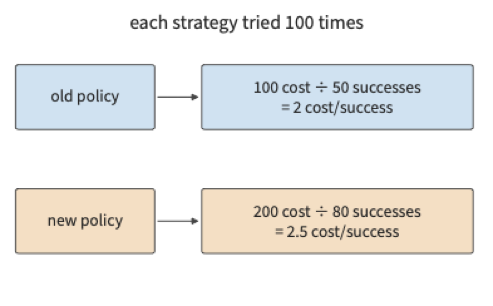
Exercise 3-3 [Extension]: Can a higher success rate offset the increased cost per attempt
The old method costs 1 unit per attempt with a 50% success rate; the new method costs 2 units per attempt with an 80% success rate. Compute the average cost per completed successful task, and determine whether the new method is more economical. If the new method's cost drops to 1.5 units, what success rate must it reach so that the average cost per successful task is no higher than the old method's? For tasks requiring multiple samples, explain how the costs of generation, verification, and failed attempts should be included in the total cost.
Continuing the decision-request example at the end of Section 3.2.4: the decision model costs 0.000081 dollars per request, and handing a request to the LLM costs 0.013880 dollars. Let the success rates before and after hand-off be \(p_1,p_2\). Compute the average cost per request for hand-off fractions of 1% and 5%; how large must \(p_2/p_1\) be at least for hand-off to lower the cost per successful task?
3.2.3 Agent workloads¶
Feedback can also change the subsequent computation process. A code agent first generates a modification plan, a tool writes the code and runs tests, and the model then reads the test results to decide the next step. Each loop involves both model computation and tool execution; the logs returned by the tool become the input for the next round. Therefore, reducing irrelevant logs lowers the prefill computation and context state footprint of the next round, while reducing ineffective modifications directly reduces the number of loops.
The measured task in this chapter is fixing an interval-merging function, checking whether the returned result is correct and whether the input remains unchanged. The model is responsible for deciding on modifications and invoking tools; the tool is responsible for writing files and running tests. Below, using the trajectory that successfully completed the originally specified checks within four rounds, we separately tabulate model time, tool time, and the state retained while waiting. Tool invocation details are given at the end of the chapter in Code Task Trajectory.11
Retrieval-augmented question answering involves a similar process: a retriever finds documents, which are then handed to the language model to generate an answer. When answer quality is equal, less retrieved content means lower overhead for subsequent prefill, KV storage, and context reading. Therefore, the content returned by the retriever directly affects the model's workload. Chapter 8 will compare different retrieval schemes in the context of specific tasks.12
3.2.4 Branching, tool waiting, and state residency¶
The precedence relationship between model invocations and tool executions can be drawn as a dependency graph. Along a serial path, stage times add up; branches that do not depend on each other can start simultaneously, and the join point waits for the slower branch. In a dependency graph, the path with the longest cumulative time from start to finish is called the critical path, and it determines the earliest possible completion time for the task. We first use a real code task to observe how much time the model and the tool each take, then change the dependency relationship to predict how much time parallelism can save. The table below compares two runs of the same task with thinking mode off and on; thinking mode determines whether the model first generates the thinking tokens described in Section 3.1.2.
| Observation | Thinking mode off | Thinking mode on |
|---|---|---|
| Model invocation rounds | 12 | 4 |
| Total output tokens | 765 | 2,733 |
| Sum of actual model invocation time | 13.156 s | 76.294 s |
| Sum of actual tool execution time | 0.476 s | 0.078 s |
| Return value correctness and input-unchanged check | 315/1013 | 1013/1013 |
| Additional check: no aliasing in returned sublist | 1/1013 | 710/1013 |
With thinking mode off, the cache hit rate is about 83.4%, yet the code still is not fixed; with it on, model time increases, and both originally specified checks—return value correctness and input unchanged after invocation—all pass. The additional aliasing check requires the returned sublist to be independent of the original input; the program with thinking mode on passed 710 of these cases, while the other 303 still shared the sublist.11 These two checks correspond to two different program properties, which shows that completion criteria for a task must be made concrete down to executable verification.
With thinking mode on, the task produced 2,733 output tokens in total, of which 2,553 came before the thinking end marker (the token marking the end of the thinking content), 3 were the end marker itself, and 177 came after. Thinking accounts for the vast majority of the generation work, while tool invocation converts the model's decisions into file modifications and test operations. Accumulating the actual time of model invocations and tool executions along the execution order, and adding control and handoff time, yields the total time the user waits for the whole task to complete.
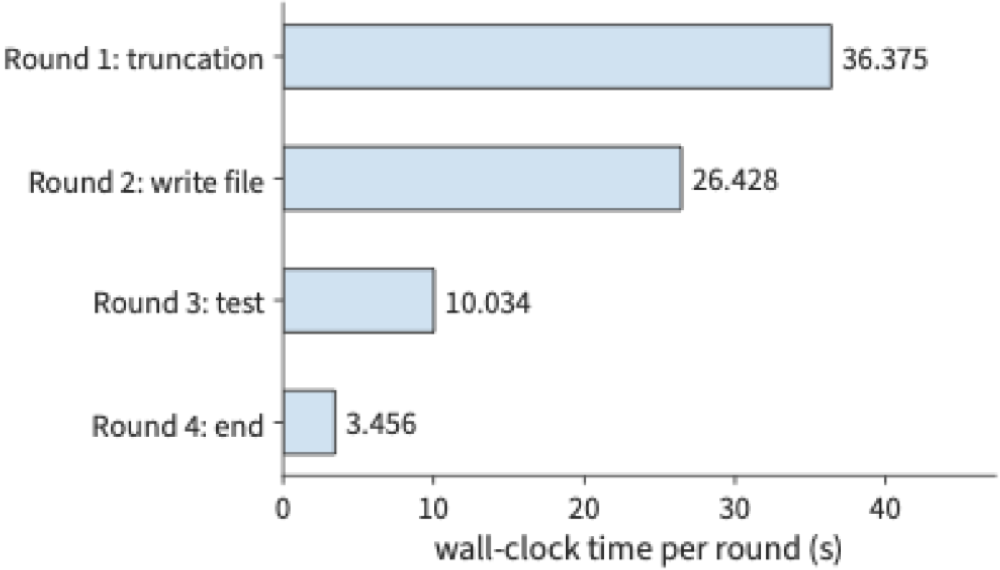
Worked Example 3-2: How much can accelerating the first-round model computation shorten a code task? Analyzed using Amdahl's law from Chapter 1, assuming subsequent behavior and quality remain unchanged.
Solution: Using the same execution trace as a baseline, shortening the first round's model computation of 36.375 seconds by half—with all other stages, outputs, tool behavior, and quality unchanged—reduces the total time from 76.510 seconds to 58.323 seconds. Here \(f=36.375/76.510\), \(s=2\), giving an overall speedup of about 1.31. The first round accounts for about 47.5% of total time; halving that portion saves about 23.8% of the total time; the remaining stages still total about 40.1 seconds. The benefit of optimization depends on how large a share the shortened portion originally occupied.13
Dependencies between tools also affect total time. Suppose the model first computes for 2 seconds, then invokes two tools taking 6 seconds and 10 seconds respectively, and finally computes for 3 more seconds. If the second tool depends on the first tool's result, the total time is \(2+6+10+3=21\) seconds; if the tools are independent of each other, the total time is \(2+\max(6,10)+3=15\) seconds. Parallelism reduces time by 6 seconds, but the total execution work of the two tools remains 16 seconds.
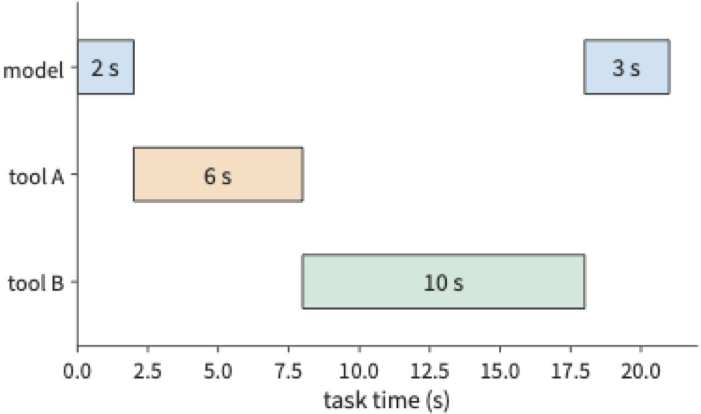
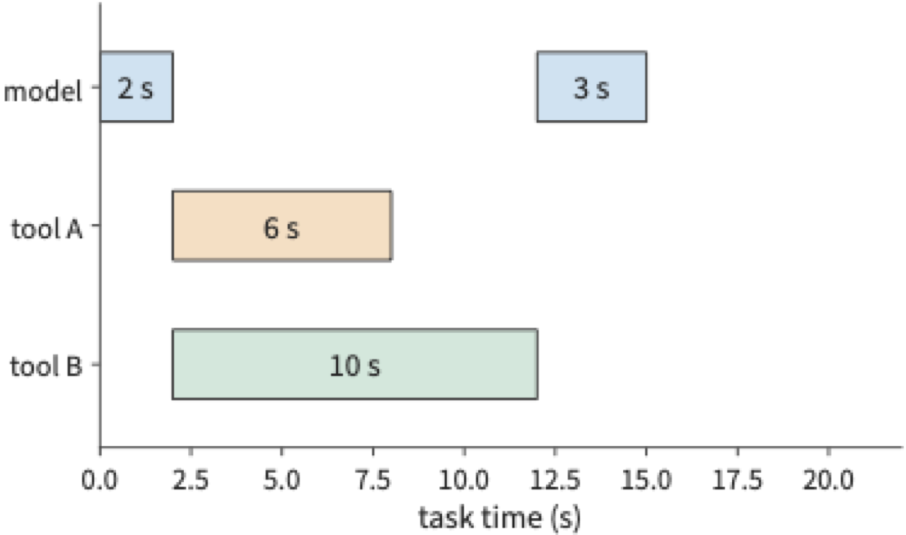
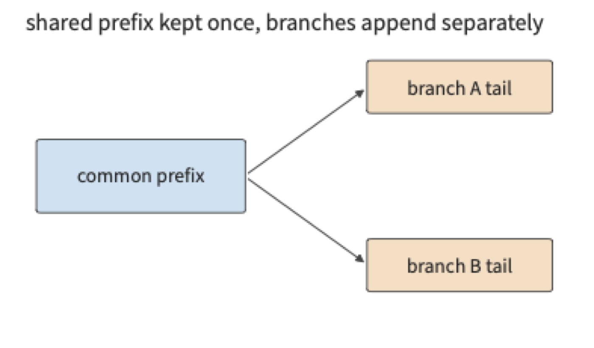
Parallelism and branching change not only time but also state footprint. If branches must each generate text separately, the shared prefix can be shared while branch tails grow independently. Let the shared prefix length be \(H_0\), let branch \(i\) add \(h_i\) new tokens, and let the state per token be \(c_{\mathrm{KV}}\); the total state is then \(c_{\mathrm{KV}}(H_0+\sum_i h_i)\). Parallelism shortens the critical path, but it also means more branches' state occupies memory simultaneously.
In the measured record of the code-fixing task in Section 3.2.3, tool invocation took very little time, and most of the time was consumed by model computation. If the tool operation were instead a 10-second compile, the context needed for the next round would still occupy capacity while the model pauses; if multiple tasks are waiting at once, the retained amount accumulates per task. The longer a tool takes to execute, the longer state is retained, and the fewer requests the system can handle at once. Chapters 8 and 9 will arrange caching and handoff along this timeline.
Exercise 3-4 [Core]: How much task time can tool parallelism and local acceleration save
A task first has the model compute for 2 seconds, then invokes two mutually independent tools taking 6 seconds and 10 seconds respectively. After both tools finish, the model computes for another 3 seconds and the task ends. Compute the total task time for the case where the two tools execute sequentially and the case where they execute simultaneously. Assuming state occupies 1 GiB only while waiting for the tools to return, find the product of state occupancy and occupancy duration for both execution modes, in GiB·s.
The measured record of the code task in this section shows the total task time is 76.510 seconds, of which the first round's model computation takes 36.375 seconds and all tool executions together take 0.078 seconds. Keeping the other stages unchanged, compute how much task time each of the following optimizations would save: increasing the first round's model computation speed to four times the original; increasing the execution speed of all tools to twice the original. Based on the results, explain why the local speedup factor alone cannot determine the benefit of an optimization on the complete task.
Workload demands can also drive changes in model architecture. Switching the same conversation to DeepSeek V4.1 Flash provides a concrete example. Suppose an agent already has a segment of common context, and a tool then returns new material; if the prefix is not a hit, the service must reprocess a relatively large amount of input, while this round's output may be short. Lowering prefill cost for such input-heavy scenarios is more valuable than optimizing single-step generation alone. V4.1 therefore adopts the CED structure introduced in Chapter 2, using 20 causal encoder layers and 20 decoder layers: most input passes through only the encoder body, and the decoder's global KV is obtained by projecting from the encoder's final-layer representation; to construct the decoder's SWA state, the encoder outputs of at most the last 128 tokens of the prompt are fed back into the decoder, approximately restoring this portion of local state. Output tokens continue to pass through all 40 layers.46
We first compare the workload of the expert matrix computation, measuring work by the sum over tokens of the number of expert layers each token passes through. Let the input from an empty state be \(P\) tokens; the ordinary 40-layer path is then \(40P\), while the CED schedule described in the report is \(20P+20\min(P,128)\). When \(P=8192\), these are 327,680 and 166,400 respectively, with the latter about 50.8% of the former; when \(P\leq128\), this subterm shows no reduction.
With an existing prefix, the workload of processing the input is jointly determined by the appended length and the recovery method. If the encoder's SWA hits the cache, the encoder body can continue processing the appended input; if the encoder's SWA misses, the tail window of the prefix must be replayed first. Both paths then must construct this round's decoder SWA. Chapter 8 will use teaching examples with 8K and 128K contexts to compare the cost of saving state versus re-execution.
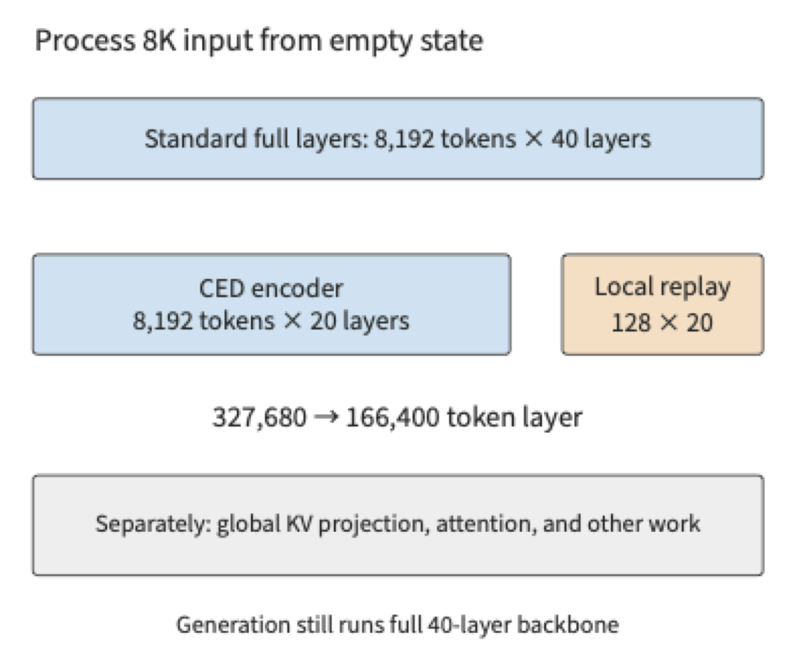
Example: why Jev answers in the blink of an eye. In September 2026, TypeSafe AI, founded by former OpenAI researcher Diogo Almeida, released the Jev model. According to the founder's launch post, at OpenAI he helped build the methods that taught language models to follow instructions and hold conversations, work that became the research behind ChatGPT.14 Jev's official demo is striking: for the same customer-service request, GPT-5.6 Terra took 8.566 seconds while Jev took 0.114 seconds, at 1/171 of the cost. Many people's first reaction is: is this still a Transformer? Did they build some remarkable infra? Anyone who has read this book will see there is no real secret here, and readers can easily build it themselves.
Jev does not generate text. The caller submits a piece of state (a support ticket, say) and several questions, each with its options fixed in advance, and the model returns a probability for each option. Back in the call chain of Section 3.1.1, such a request has a prefill and no decode. The state and all the questions are concatenated into one forward pass, and the output distribution at the last position of each question is that question's answer, much like the branches in Figure 3-13 that fork from one prefix, except that each stops after a single step. The questions do not depend on one another, and no KV needs to be kept once the request finishes. Whether these probabilities can be used directly as confidence depends on training: TypeSafe calls its method RLCD, which follows the same idea as RLCR from the research literature, adding a Brier score to the reward so that the probabilities the model reports match how often it is actually right.15
The book's own inputs are enough to check this. Jev charges only for input, 0.042 dollars per million tokens; the demo request cost 0.000081 dollars, which works out to about 1929 input tokens. On Qwen3-8B this request is one forward pass of about 28 TFLOPs, which takes about 70 ms on an H100 SXM at 40% compute efficiency, in line with the demo's 0.114 seconds. On DeepSeek V4.1 Flash along its CED path, the work grows by only about a quarter. An ordinary LLM, after the prefill, would still have to generate tokens one at a time, each step limited by memory bandwidth and taking about 9 ms. Generating 64 tokens pushes latency to 0.65 seconds, 9 times that of the decision request; because decode can be batched, GPU time grows by only 28%. Figure 3-15 puts the two executions on the same timeline: the instant answer comes from skipping serial generation.16
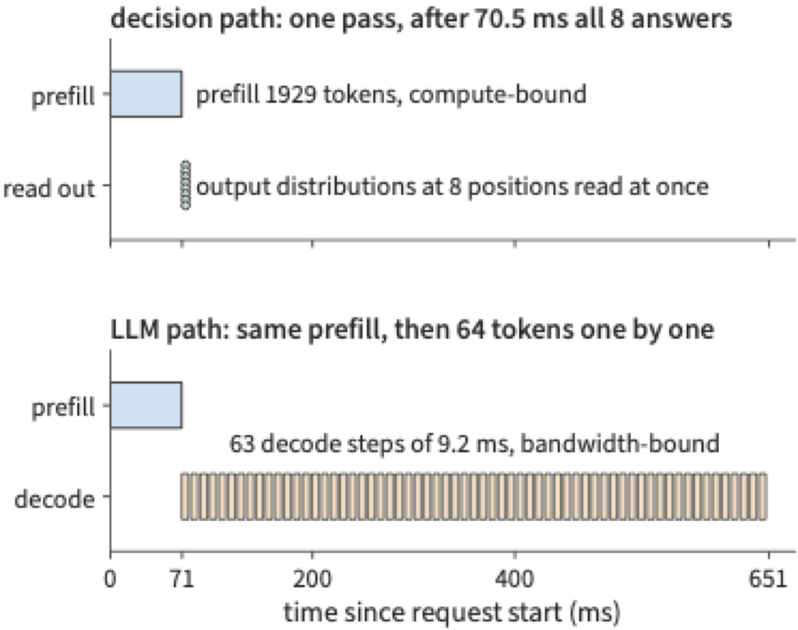
Pricing is no mystery either. Taking the DeepSeek inference-system report's figure of 2 dollars per GPU-hour, an 8B dense model or V4.1 Flash spends about 0.02 to 0.025 dollars of compute per million input tokens, and Jev's price is 1.7 to 2 times that. In other words, a model of this class reaches this price with nothing more than an ordinary prefill; conversely, if the price is to cover cost, Jev's work per token is unlikely to exceed about twice that of an 8B dense model. Of the 171-fold cost gap in the demo, only a small part comes from skipping generation: on the same model, dropping 64 to 512 output tokens cuts GPU time only to between 1/1.3 and 1/3.4 of the original. The rest comes from the price of the frontier model itself and the many tokens it generates while reasoning.
In practice, requests the decision model is unsure about still have to be handed to an LLM. Let the hand-off fraction be \(e\); the average cost per request is then \(c_{\mathrm{dec}}+e\,c_{\mathrm{LLM}}\). With the two costs from the demo, once \(e\) exceeds about 0.58%, the hand-off cost is larger than the cost of the decision model itself. The \(c\) in the cost per successful task of Section 3.2.2 must therefore include hand-off costs. Whether a decision model saves money depends on how many requests must be handed off and how expensive the receiving LLM is.
3.3 Multimodal and real-time interaction¶
An agent's tool results usually enter the next round's input as text. If the input becomes an image or continuous speech instead, the input must be encoded before the model is invoked, and the output side may also require continuous playback. This section first analyzes how the shape of the data changes between stages, then analyzes when each stage must complete.
3.3.1 Vision encoding, language generation, and state¶
Before an image enters the language model, it must go through preprocessing, vision encoding, and projection. Let \(\mathrm E\) denote vision encoding, \(\mathrm P\) denote language prefill, and \(\mathrm D\) denote subsequent decode; a single visual question-answering task thus follows the basic dependency \(\mathrm E\to\mathrm P\to\mathrm D\). Image size affects the workload of \(\mathrm E\), while the number of encoded visual tokens affects the workload of the language portion; these two workloads should be computed separately.
First count the visual tokens, then count the feature dimension of each vector. Let the height and width of the preprocessed image be \(H_{\mathrm{img}},W_{\mathrm{img}}\); dividing the image into square image blocks (patches) each with side length \(p_{\mathrm{patch}}\), and further merging \(r\) patches per side, the number of visual tokens is
Take a concrete configuration as an example. For the vision-language model Qwen3-VL-4B, a \(640\times640\) image, divided into \(16\times16\) patches, yields 1600 patches, which after a further \(2\times2\) merge yields 400 visual tokens. The final feature width is 2560, and the BF16 tensor \([400,2560]\), at two bytes per element, occupies \(400\times2560\times2=2{,}048{,}000\) bytes.
But the encoding result is not just this one tensor. To provide the language model with visual information at different depths, DeepStack feeds features from intermediate layers of the vision encoder into corresponding language layers. The model also takes such features from three intermediate visual layers and concatenates them with the final-layer features, giving a complete tensor of \([400,10240]\), occupying 8,192,000 bytes, i.e., 7.8125 MiB. The four sets of features correspond to the same set of 400 visual tokens: the feature width becomes four times as large, while the language sequence still gains only 400 visual tokens. The matrix computation for vision encoding is about 1.310 TFLOPs; image decoding and scaling occur before encoding, while language computation occurs after encoding.17
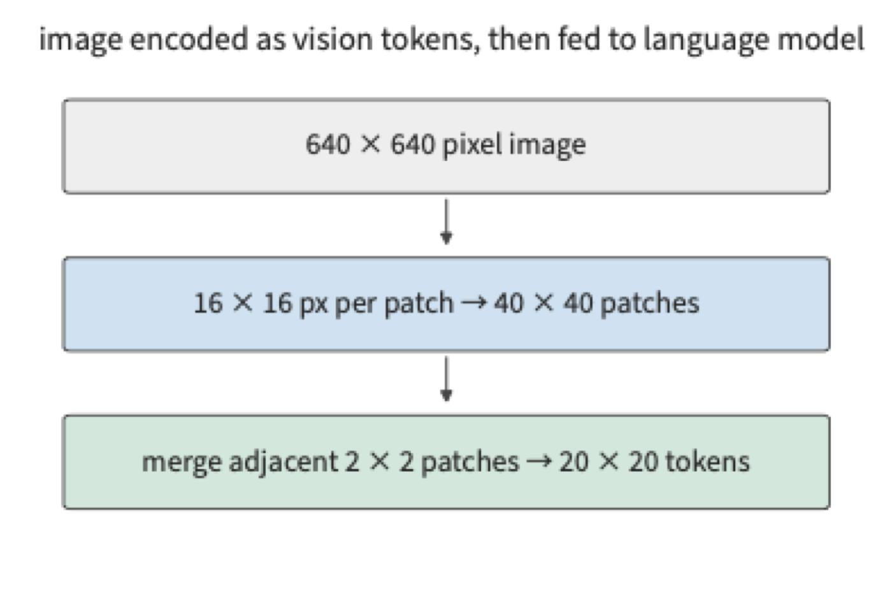
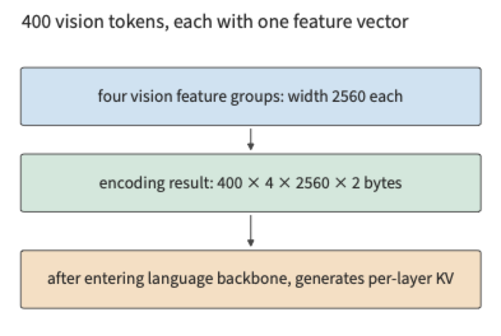
In Figures 3-15 and 3-16, vision encoding changes the number of visual tokens and the feature width; after entering the language model, another kind of representation is produced. The encoder cache (EC) holds the vision encoder's output, while the language backbone produces the KV cache. In this configuration, the language KV occupies 144 KiB per token, so 400 visual tokens correspond to 56.25 MiB. Thus, the same teaching screenshot corresponds to different data volumes at three processing stages: the original compressed file at 0.8 MB, the complete BF16 EC at 7.8125 MiB, and the logical KV of the visual tokens at 56.25 MiB.18
| Object | Size in this example | Conditions determining reusability |
|---|---|---|
| Compressed screenshot | 0.8 MB, given input | Same file content |
| Complete encoding result EC | 7.8125 MiB | Image, preprocessing, encoder, and output format must all match |
| Language KV of visual tokens | 56.25 MiB | Also depends on prior context, order, position, and model state |
When the image and encoding configuration are the same, the EC can be reused. The language KV further depends on the context preceding the image: if the question is placed before the image, changing the question changes the KV of the visual tokens; if the question is placed after the image, causal attention keeps the KV of the earlier visual tokens unchanged.
Encoding state and KV capacity budget for multimodal input. Suppose the input contains four images and 400 text tokens; compute the EC and logical KV for these input tokens. The EC for four images of the same specification is 31.25 MiB, and the visual token KV is 225 MiB; adding the 400 text tokens, the input's logical KV is 281.25 MiB.
The original image, the EC, and the KV—these three data representations—correspond to three different handoff points. Sending the original image means the receiver must still perform vision encoding; sending the EC means the receiver starts from language prefill; sending the KV means the language context handoff is already complete. Chapter 8 arranges same-card execution, Chapter 9 compares stage handoffs, and Chapter 12 places this same data flow onto edge, edge-server, and cloud links.
Keeping the patch size and merging scheme unchanged, doubling both the height and width of the image makes the number of visual tokens four times as large. Consequently, both the EC and the language KV of the visual tokens become four times as large; the interactions among tokens inside vision encoding must still be computed according to the attention structure. Feature concatenation increases width, while enlarging the image increases the number of visual tokens; the two produce different consequences within the language backbone.
3.3.2 The computation process for audio and image generation¶
Visual question answering still generates text token by token through the language model. If the output itself is sound or an image, the data processed per iteration and the number of iterations also change.
Audio output also involves an inner loop within each frame. Take Fish Audio's speech generation model S2 Pro as an example: the slow path advances one audio frame at a time, while the fast path fills in the codes for multiple codebooks within a frame. A codebook is a candidate vector set for discrete sound representation; a codec converts these code indices back into a waveform. Each frame first uses one fast-path forward pass to establish state, then uses nine more predictions to fill in the codebooks, so generating one frame requires ten fast-path forward computations in total. It follows that language tokens/s, acoustic frames/s, and seconds of audio generated per second are measures of different generation speeds.4519
Image generation involves yet another kind of loop. A latent is a compressed, continuous image representation; denoising gradually converts a noisy representation into the target image. A Diffusion Transformer (DiT) executes the transformation at each step, classifier-free guidance (CFG) combines the conditional and unconditional predictions, and a variational autoencoder (VAE) handles the conversion between pixels and the compressed representation. Take the image generation model Qwen-Image-2512 as an example: a \(1024\times1024\) image forms 4096 latent positions, executes 50 denoising steps, and with the true-CFG path having two DiT forward passes per step, a total of 100 DiT forward computations are executed. The denoising matrix computation is about \(7.830\times10^{15}\) FLOPs; the text encoder and the VAE each have additional work of their own. The set of latent positions remains fixed throughout denoising, while their content is repeatedly updated at each step, so the accumulated work grows with the number of denoising steps.20
Let the computation per denoising step be \(F_{\mathrm{step}}(n_v)\), the number of denoising steps be \(n_s\), and the number of guidance branches per step be \(n_b\); the total computation is \(n_sn_bF_{\mathrm{step}}(n_v)\). Doubling the number of steps doubles the computation; increasing resolution increases the number of spatial positions in the image's latent representation, which in turn increases both the number of matrix rows within a single step and the interactions among positions. Text generation keeps appending to the context, so the amount accessed per step keeps growing; image denoising repeatedly updates the same set of latents, so at fixed resolution, the accumulated computation grows linearly with the number of denoising steps.
3.3.3 Continuous perception, first-chunk response, and interruption¶
Total workload determines average processing demand, but real-time playback also requires every data chunk to arrive on time. Let \(A(t)\) denote the duration of playable audio that has arrived by time \(t\), and \(P(t)\) denote the duration of audio already played; the audio remaining in the buffer is
During continuous playback, for every second that passes, the played duration \(P(t)\) increases by one second, while \(A(t)\) increases in jumps as data chunks arrive. The distance between the two curves is the buffer margin; if the margin drops to zero before the next chunk arrives, the sound will cut out. Pre-buffering increases the initial margin while also delaying the start of playback.
Timing requirements act on both input and output. On the input side, if a screenshot agent only observes the screen after an action finishes, it may miss a pop-up that appears and disappears mid-action. Continuous observation and interaction research such as AOI targets exactly this kind of scenario: it separates screen observation from action execution, continuously collecting images, audio, and events, then filters out the records to feed to the model. Increasing observation frequency can catch more brief events, but keeping more key frames also consumes context; too many key frames can also crowd out important information, degrading task performance.21 Therefore, continuous observation must be paired with filtering to decide which content is worth keeping and passing to the model.
Speech has more direct timing constraints. After the user stops speaking, the system must capture or confirm the input, then go through recognition/encoding, inference, speech generation, and playback. Once playback begins, subsequent audio must still arrive on time to avoid interruption.
After an audio chunk reaches the application, it still goes through decoding, queueing, and playback. In two measured speech interactions, the time from the user stopping speaking to the first audio chunk arriving was about 400 ms and 370 ms respectively, and the median inter-arrival interval of subsequent audio chunks was about 94 ms in both cases.22 Arrival time tells us when data becomes available, while the playback clock determines when audio is actually played out.
Use the following set of parameters to lay out a timeline showing how buffering between the two avoids sound interruption. The input forms one chunk every 20 ms, at 24 kHz, mono, 2 bytes per sample, so each chunk's data volume is:
After each chunk finishes capturing, model processing takes 12 ms, sending takes 1 ms, and network propagation typically takes another 5 ms. The first chunk arrives at 38 ms, waits 40 ms in the jitter buffer (a buffer that temporarily holds arrived audio to absorb variation in arrival time), and is played at the 78th ms after capture began. The propagation delay of the third chunk is set to 50 ms, so it does not arrive until 123 ms, missing its planned playback time of 118 ms and causing an extra 5 ms stall. Later chunks, though already arrived, must still wait their turn in sound order.
Changing the buffer to 60 ms eliminates this stall, but delays the first playback to 98 ms. Increasing the buffer can absorb this particular arrival-time fluctuation and avoid playback interruption, at the cost of a later start; if the average arrival rate of audio is persistently lower than the playback rate, a finite buffer will eventually run dry.23
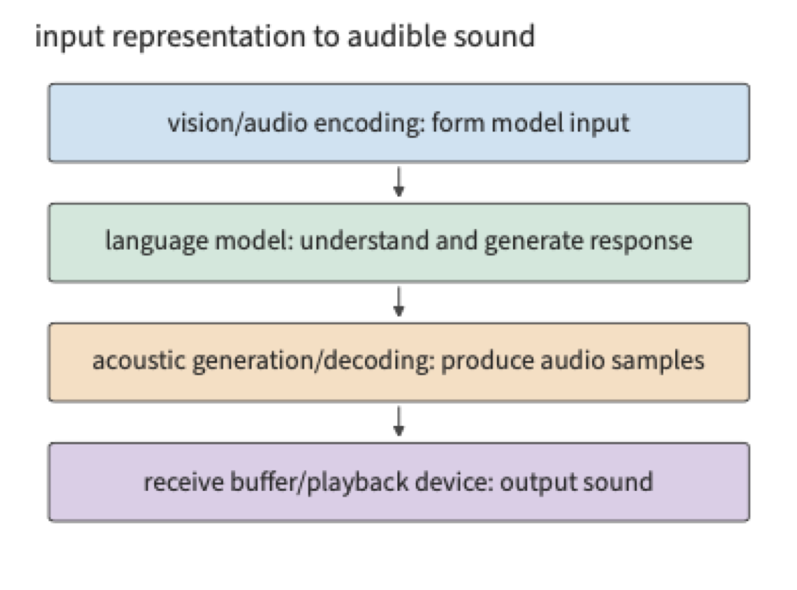
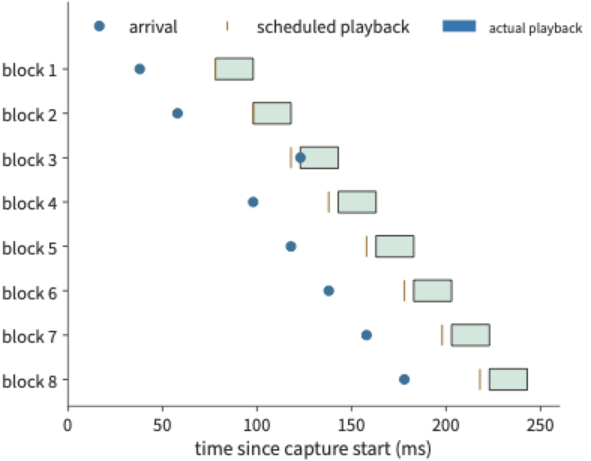
Beyond playback continuity, interruption response must be checked separately. Figure 3-20 times from when the user issues an interruption, tracking when local playback actually stops; whether remote generation stops must be judged along a separate control path.
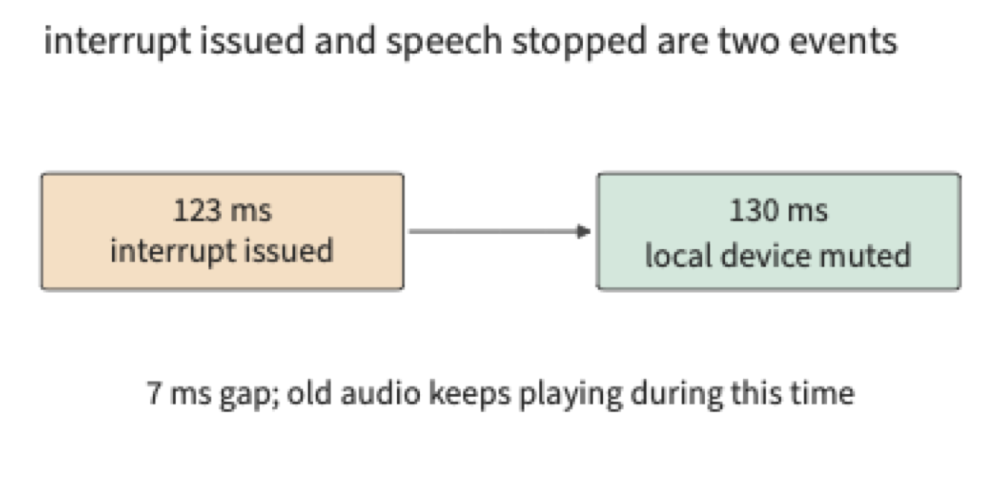
Interruption involves several operations: the application issues a cancellation command, the playback device mutes, the backend stops generation, and buffers and state are released. In the teaching timeline, the interruption is issued at 123 ms, control delay is 5 ms, and the device checks and executes control commands every 10 ms, so it mutes at 130 ms, giving the user a perceived interruption delay of 7 ms. Device muting, backend stopping generation, and releasing buffers and state correspond respectively to the moments playback stops, computation stops, and storage is released: when the backend stops generation determines when subsequent computation ends, while buffer release determines when the capacity becomes available for other tasks.24
Not every task requires continuous output. RAW is an image representation that preserves the camera sensor's original sampled information. RAW image enhancement is concerned with when a complete finished image can be obtained, and does not need continuous output the way speech does. Enhancement also needs to preserve the original image information; the EC used for visual understanding cannot substitute for the original image. This shows that different tasks have different timing requirements: some need to start as soon as possible, some need to stay continuously smooth, and some need to be completed entirely as early as possible.
Exercise 3-5 [Extension]: How do image resolution and audio buffering affect resource requirements
Change the resolution of the Qwen3-VL-4B input image from \(640\times640\) to \(1280\times1280\), keeping the patch size, merging scheme, and feature precision unchanged, and find the number of visual tokens, the size of the complete encoder cache EC, and the KV size corresponding to these visual tokens. Then, using this section's audio timeline, compare the first playback moment and stall behavior for initial buffers of 40 ms and 60 ms. If only 0.9 seconds of audio can be played per second received, and 0.3 seconds of audio is already buffered when playback begins, find how long continuous playback can last before the buffer runs out, and explain what problem increasing a finite buffer can solve.
3.4 The Computation and State Requirements of Training¶
3.4.1 Forward Computation, Backpropagation, and Parameter Update¶
Inference uses weights to compute outputs; training also uses the difference between the output and the target to adjust the weights. Take the simplest case, a single multiplication: input x times weight w gives y. Once the next layer passes back the sensitivity of the loss with respect to y, computing the sensitivity of the loss with respect to w still requires the x from that step; passing the sensitivity back to the previous step requires w. So after the forward pass hands its result to the next layer, certain inputs must still be retained until the backward pass has used them, at which point they can be released.
For a linear layer \(Y=XW\), the input \(X\) has shape \([m,k]\) and the weight \(W\) has shape \([k,n]\). The loss \(\mathcal L\) is a numerical measure of how far the model's output is from the training target; the goal of training is to reduce the loss. A gradient describes how sensitive the loss is to a small change in some input or parameter. Backpropagation carries these sensitivities backward along the dependency chain from the output. Given that the next layer passes back \(\partial\mathcal L/\partial Y\), the current layer must compute two gradients:
The forward pass computes the output; the backward pass computes the input gradient and the weight gradient separately. The three matrix multiplications involve the same amount of work, so the matrix FLOPs of training this linear layer are about three times those of the forward pass. The table below counts one multiply-add as two FLOPs.
| Operation | Problem it solves | Shapes of the left and right inputs | Output shape | Matrix FLOPs |
|---|---|---|---|---|
| Forward \(Y=XW\) | Compute the output from the input | \([m,k]\) and \([k,n]\) | \([m,n]\) | \(2mkn\) |
| Input gradient \(\mathrm dX=\mathrm dY W^{\mathsf T}\) | Pass the error back to the previous layer | \([m,n]\) and \([n,k]\) | \([m,k]\) | \(2mkn\) |
| Weight gradient \(\mathrm dW=X^{\mathsf T}\mathrm dY\) | Find the adjustment direction for this layer's weights | \([k,m]\) and \([m,n]\) | \([k,n]\) | \(2mkn\) |
The input gradient passes the error signal to the previous layer; the weight gradient determines the adjustment of this layer's parameters. Looking at the three sets of matrix dimensions, although the multiplication order differs, all three operations involve the same \(mkn\) multiply-adds, so together they total about \(6mkn\) FLOPs. If every training token passes through the same set of primary parameter matrices, accumulating this gives the common approximation \(F_{\mathrm{train}}\approx6ND\), where \(N\) is the parameter count and \(D\) is the total number of training tokens.25
Structural changes can also be handled with this same reasoning. Freezing a weight matrix eliminates the need to compute its weight gradient; if earlier layers still need gradients, the input gradient must still be computed. MoE accumulates these two kinds of gradients over the experts actually selected, while attention accumulates them over query–key pairs. Summing term by term along the backward dependency chain gives the amount of computation required by each training method.
Beyond the amount of computation, training also introduces new state-retention requirements. Besides the \(X\) needed to compute \(\mathrm dW\), computing gradients for nonlinear operations also requires the corresponding intermediate results. Parameter gradients are produced during backpropagation and then used by the optimizer to compute the parameter update. The optimizer's state records information accumulated over multiple updates, so it must be retained until the next update. How long each kind of data must be retained depends on the last operation that uses it: a given layer's activations are typically released once that layer's backward computation has finished using them, whereas the optimizer's momentum must persist across multiple updates.
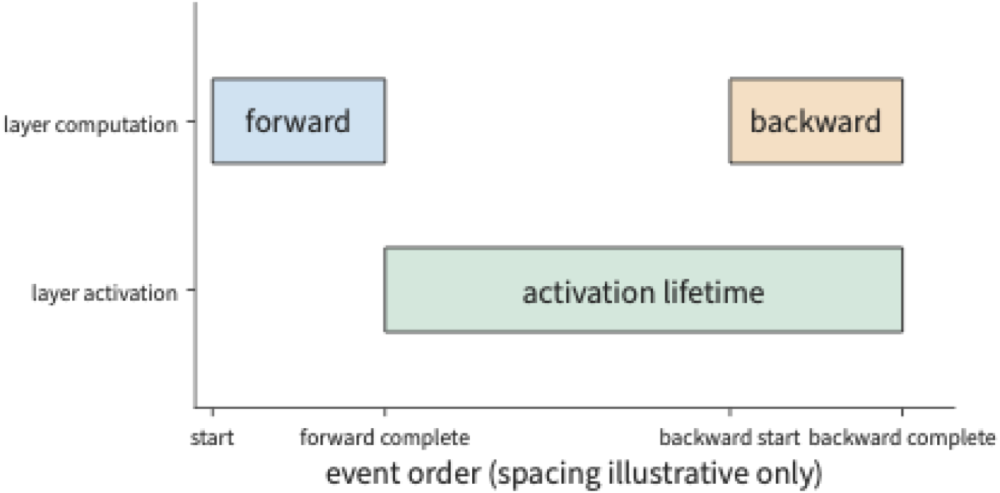
Example 3-3: Why do gradients and optimizer state multiply the memory requirements of training?
Solution: Take Qwen3-8B's 8,190,735,360 parameters as an example, storing BF16 weights, FP32 gradients, a separate FP32 master weight, and Adam's two FP32 moment estimates. Adam is an optimizer that adjusts the update magnitude based on moving averages of the gradient and the squared gradient; the two moment estimates store these two averages respectively. Without sharding (splitting these states across multiple cards for storage), each parameter needs \(2+4+4+4+4=18\) bytes, totaling 147.433 GB, roughly 137.308 GiB. Even before counting activations, this state already exceeds the rated GPU memory of a single H100 SXM (80 GB), an RTX PRO 6000 Blackwell Workstation Edition (96 GB), or even an H200 (141 GB). The BF16 weights are used for forward and backward computation, the gradients are used to compute the update, the FP32 master weight is used for high-precision updates, and Adam's two moment estimates accumulate statistics on the gradient and its square. Together, this data occupies nine times the space of the inference BF16 weights.26
Having clarified the state requirements, we now analyze how data is batched into training. A micro-batch is the subset of data actually processed by a single forward and backward pass; a complete training batch can be composed of multiple micro-batches. Micro-batches must also be distinguished from parameter updates. When GPU memory cannot hold a complete training batch, gradients can be accumulated over multiple micro-batches before a single parameter update. As long as the objective, the effective labels, and the normalization stay consistent, splitting the same training batch into more micro-batches changes the execution order and the activations' lifecycle, while the total amount of training data remains unchanged. Chapter 10 will build on this to discuss sharding and pipelining.
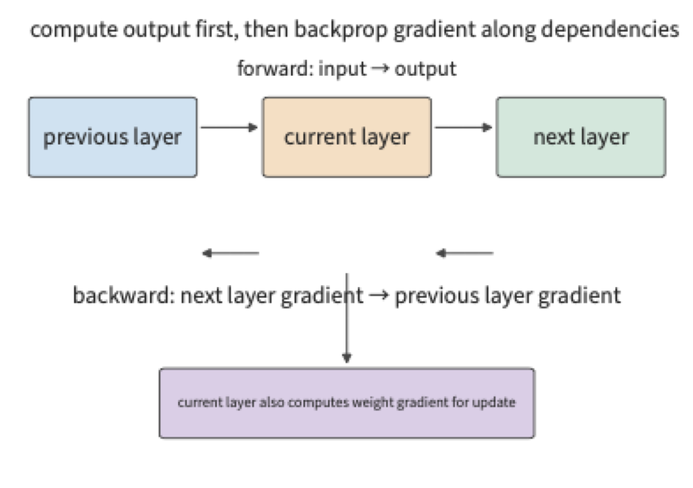
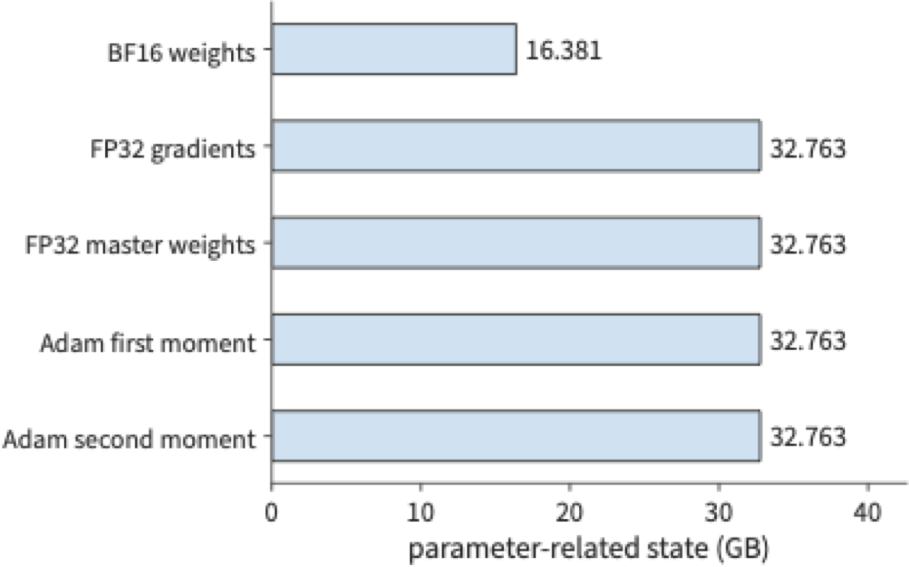
Training must also continually prepare the next batch of input. The CPU reads, decodes, and tokenizes data, assembles it into a batch, and then sends the tensors to the accelerator. Double buffering lets the next batch be prepared while the current batch is being computed: one buffer is read for computation while the other receives new data, and the two alternate. Once the computation finishes using the already-prepared data, it must wait for new input; retrieving the accelerator's results likewise involves waiting for the corresponding computation to finish. Chapter 5 will combine the execution order of the forward pass, backward pass, and parameter update to analyze how data preparation and computation can overlap.
3.4.2 Pretraining, Mid-Stage Training, and SFT¶
Training stages have different names, but the system must answer the same questions each time: how many input tokens are there, which tokens contribute to the loss, and after how many micro-batches does a parameter update occur. Pretraining typically performs next-token prediction on continuous text; mid-stage training adjusts the data composition or context length; supervised fine-tuning (SFT) continues training the model using given inputs and target responses, often feeding the instruction and the response together while computing the loss only on the response. When estimating resources, these differences must be translated into input shapes, the number of tokens under supervision, and the update frequency.
Qwen3's training process illustrates these variations: the general stage trains on sequences of length 4096 over more than 30 trillion tokens, after which science, technology, engineering, and mathematics (STEM), code, reasoning, and synthetic data are added, and training continues for about 5 trillion more tokens; the long-context stage then extends the length to 32768.27 Changes in data composition affect what is learned, while sequence length directly changes how much preceding context each token can access, so the two must be examined separately.
System requirements change with length. Suppose two independent documents both contain 8192 tokens: one split as \(4096+4096\), the other as \(7168+1024\). The number of rows in the parameter projections is the same, but the effective causal-attention query–key pairs differ, at 16,781,312 versus 26,218,496 respectively. In a single layer of Qwen3-8B, the forward work for \(QK^{\mathsf T}\) and \(AV\) grows from about 0.275 to 0.430 TFLOPs, an increase of roughly 56%. Tokens in the longer document can see more preceding context, so with the same total row count, the context interaction increases, while the projections and FFN still process the same 8192 token representations. How much the whole layer's computation grows depends on what fraction of the original workload this newly added interaction represents.25
In SFT, the tokens the model reads and the tokens that contribute to the loss often differ. A sample may include a system prompt, a user question, tool results, and a response, but training computes the loss only on the response portion. The other tokens still pass through the backbone network, providing context for the response. An implementation can also compute the vocabulary projection only for tokens under supervision; if it instead only masks out tokens not under supervision when computing the loss, without skipping the vocabulary projection for those tokens, that matrix multiplication still runs as usual.
Besides computing the loss on only part of the tokens, fine-tuning can also train only part of the parameters, in which case the parameters requiring stored gradients and optimizer state shrink correspondingly. A frozen module's weights stay unchanged, but gradients must still pass through it to reach earlier trainable modules, so its input gradient must still be computed. Going layer by layer along the backward graph and deciding whether to compute the input gradient and whether to compute the weight gradient lets us work out the training state and computation separately.
The number of micro-batches and updates controls how many times work is repeated. Suppose each micro-batch has \(B_\mu\) sequences of length \(P\), and \(a\) micro-batches are accumulated before each update; then each update reads \(aB_\mu P\) input tokens. If each sequence has only \(P_{\mathrm{label}}\) tokens under supervision, the effective token count used for loss normalization is \(aB_\mu P_{\mathrm{label}}\). Increasing the accumulation count enlarges the batch for each update while letting a single update execute over multiple forward-backward passes; the parameter state is retained throughout, while each micro-batch's activations can be released once its backward pass finishes.
3.4.3 From \(6ND\) Estimation to Itemized Training Cost¶
Once the training data and the effective token count are determined, the total amount of computation can be accumulated. Start with the rough estimate that a linear layer's training cost is "about three times the forward pass," then add back attention, the vocabulary head, and state updates term by term, to see the gap between the rough estimate and the complete model.
Take one full training forward and backward pass as an example: Qwen3-8B, \(B=1,\ P=8192\), full-parameter training, the vocabulary head executed for all input tokens, no recomputation (re-executing part of the forward pass during the backward pass to save on stored activations). Accumulating layer by layer over the projections, FFN, \(QK^{\mathsf T}\), \(AV\), and the output head gives the following matrix FLOPs.26
| Matrix computation | TFLOPs |
|---|---|
| Forward matrix | 143.789 |
| Backward matrix | 287.579 |
| Forward plus backward | 431.368 |
| Of which, causal attention \(QK^{\mathsf T}\) and \(AV\), forward plus backward | 59.381 |
| Total parameters plugged into \(6ND\) | 402.591 |
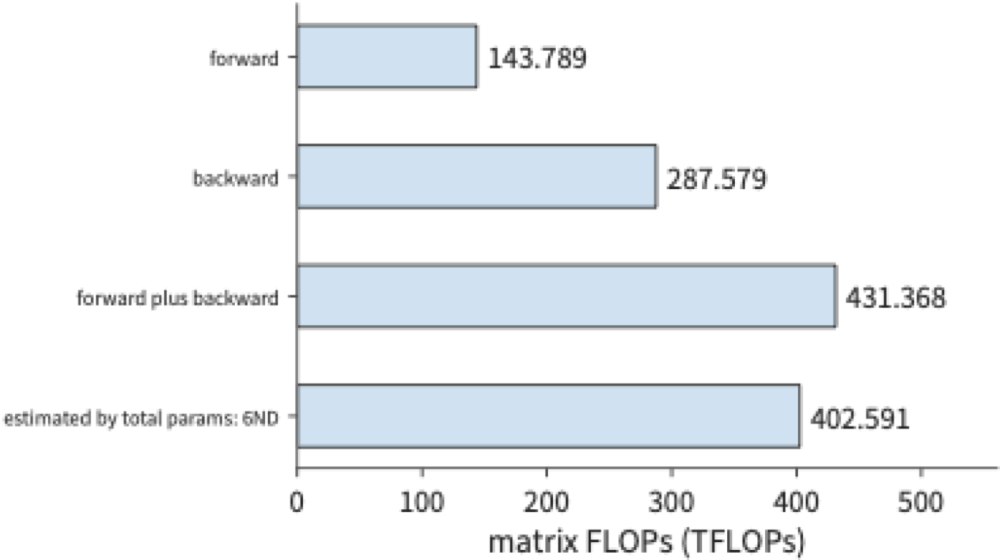
Correcting the rough estimate of 402.591 TFLOPs up to 431.368 TFLOPs requires first identifying what work was missed and what was double-counted. The matrix multiplication between queries and context does not correspond to a set of model parameters, yet it contributes 59.381 TFLOPs to the forward and backward passes combined; on the other hand, modules such as word embeddings contain parameters but do not execute a complete matrix multiplication for every token, so they cannot simply be counted via \(6ND\). After these two corrections offset each other, the total matrix computation is about 7.15% higher than the rough estimate. This is the first kind of gap described in Section 1.3.4: the rough estimate missed attention's quadratic term and over-counted parameters that don't participate in a full matrix multiplication. What needs correcting is the model itself, independent of the implementation. Only the corrected lower bound can be used to measure the system's utilization.
If the number of effective labels is reduced to 4096 while the vocabulary projection is still computed for all tokens, the matrix computation stays unchanged. If instead the hidden vectors for tokens under supervision are extracted first, and the vocabulary projection is computed only for them, the total drops to 416.074 TFLOPs. The backbone network still processes all input tokens; what is saved is the vocabulary projection for tokens not under supervision. During the backward pass, the gradients are then placed back into the corresponding positions.28
Normalization, activations, the loss, and the optimizer all also require computation and read/write. Take the parameter update as an example: even for a short sequence, the weights, gradients, and optimizer state must still be read and written; the shorter the sequence, the larger this cost's share of the total tends to be. The training budget must therefore account for both the matrix computation that grows with the token count and the update overhead determined by the parameter count.29
New forward operations added to the model also add corresponding backward computation. Context compression requires gradients through the projection, pooling, and state update; mHC requires propagating gradients across all the residual paths; MoE must compute gradients only for the experts actually selected.30 The computation graph of Chapter 2 can therefore also be used to determine which intermediate results must be stored during training and which operations the backward pass must execute.
So, when sequence length changes, we can first judge each cost's trend: parameter projections grow with the number of input rows, attention grows with the number of query–key pairs, and optimizer updates grow with the parameter count and update frequency. With recomputation, the capacity requirement drops, but the recomputed forward work must be added back to \(F_{\mathrm{train}}\). All of these changes can be explained term by term along the same forward-backward graph.
Exercise 3-6 [Extension]: How much computation, training state, and supervised tokens does a single parameter update require
Derive the sizes of the input gradient and weight gradient from \(Y=XW\), and explain why the three matrix multiplications involve the same amount of computation. For Qwen3-8B, compute the total long-term training state capacity at 18 bytes per parameter, then change the gradient to BF16 and find the capacity saved. Suppose each micro-batch contains 2 sequences, each with 4096 input tokens, of which 1024 tokens are under supervision. After accumulating 8 micro-batches, a parameter update occurs; find the total input tokens and the total effective supervised tokens processed per update. Explain the difference in computation between only masking out unsupervised tokens in the loss versus computing the vocabulary projection only for tokens under supervision.
3.5 Reinforcement Learning (RL)¶
3.5.1 Rollout, Reward, and Environment Verification¶
Inference starts from an external request; pretraining starts from existing text. Reinforcement learning (RL) uses feedback obtained from actions to improve subsequent actions. In a language model, the policy is the probability distribution over the next token given a context. RL connects two paths: the current policy first generates a response, then feedback determines how to update the parameters, and the updated policy goes on to produce the next batch of data. The generation process is usually called rollout.
This training approach already has public practice behind it: DeepSeek-R1 presents an approach starting from reasoning tasks and verifiable rewards. For tasks like code and mathematics that are easy to check, feedback can come from rules or tests; for tasks that require actual operation, tools and environments must be run. A reward is a numerical value used to evaluate the effectiveness of a response or action. If the reward is produced by another model, this adds extra inference. A single "training iteration" can therefore involve multiple models, CPU tests, sandbox waiting, and a gradient update.31
More recent models combine RL with other training stages. DeepSeek V4-Flash first trains domain experts through SFT and RL, then integrates the capabilities of multiple experts into a single model through multi-teacher on-policy distillation (OPD). Distillation lets a student model learn from the output information provided by teacher models; in OPD, the current student generates the trajectories itself, and the teachers provide the probability distribution over candidate outputs at those token positions, from which the student learns. Teacher forward passes thus become an additional piece of model work between generation and the update; rule-based verification, meanwhile, provides feedback through tests or program execution, requiring a separate set of compute resources.32
When analyzing resources along this cycle, first identify the producers and consumers of data: the policy produces tokens, the reward function or teacher reads the responses, the learner reads training samples and produces new weights, and the model replicas responsible for generation then use the new weights. If one role slows down, subsequent roles must wait; adding a teacher model requires additional forward computation and weight storage space. All subsequent parallelism arrangements must be built on this dependency graph.
3.5.2 Effective Samples, Policy Updates, and Weight Synchronization¶
After generating responses and computing rewards, a decision must still be made about which samples are used for learning. The key is to distinguish between the samples already generated and the samples that ultimately enter the update: the former determines the generation cost, the latter determines the training batch, and the two counts need not match.
Suppose a round needs to retain \(n_{\mathrm{keep}}\) samples, and the average retention fraction of generated samples is \(a\); then the expected number of samples that must be generated is
To retain 16 samples, when the fraction is one-half, an average of 32 must be generated; when it drops to one-quarter, an average of 64 must be generated. Generation and scoring process all responses, while the parameter update processes only the retained samples; a drop in the retention fraction increases the work of the first two stages without expanding the update batch by the same proportion. Section 3.5.3 will use equal-length samples and a specific generation count to compare these two cases.
Whether a sample is retained is determined by the training method and its filtering rules. Some methods treat failed responses as negative feedback; others exclude truncated responses or responses with invalid rewards. Advantage represents how much better or worse a response is relative to a comparison baseline. When using group-relative advantage, multiple responses to the same question must be compared. So the number of retained samples determines how much data is processed at update time, while the reward and loss function determine what gradients this data produces.
Example: how identical rewards eliminate the within-group learning signal. In policy updates using group-relative rewards, if all responses in a group receive the same reward, then after subtracting the group's average reward, every response's advantage is zero, and the corresponding policy gradient is also zero. This can happen when all responses are correct. The model has gone through the full generation, scoring, and update pipeline, yet obtained no signal distinguishing good responses from bad ones within this group. Only when the rewards differ does a nonzero advantage arise, letting the policy loss push the parameters in the corresponding direction.33
How the loss is averaged also affects training. If the goal is to average over all effective tokens in the whole batch, then accumulating gradients across micro-batches must use the total effective token count of the whole batch as the denominator. If instead the mean is computed separately for each micro-batch and these means are then averaged, tokens in micro-batches with fewer effective tokens may end up with disproportionately large weight. Chapter 10 will explain this distinction using specific training methods.34
After the update, the policy weights must still be sent to the generation side. If the generation side keeps using the old version, the next batch of data will still be produced by the old policy. A synchronous cycle can wait for the weights to be ready before generating; asynchronous schemes allow some stages to overlap but must handle sample versioning and staleness. This chapter has established this dependency; Chapter 10 will discuss handoff, preemption, recovery, and resource ratios.
3.5.3 With a Fixed Number of Effective Samples, How Much Computation Does Each Stage Need¶
This distinction can be quantified with a fixed target: each round must retain 16 samples for the update. If responses become harder to pass filtering, more responses must be generated first.
Example 3-4: as the sample retention fraction falls, how much more computation is needed to keep the number of update samples constant?
Solution: Take Qwen3-8B as an example, with eight questions, four responses generated per question, \(P=1024,\ G=256\), retaining a total of 16 samples for one policy update. The reference model (a model with fixed weights used to constrain how far the policy can deviate) has the same structure as the policy model and stores its weights separately; the reference model runs one forward pass on each of the 32 responses, and this example does not call a teacher model. All samples have the same length, generation does not stop early, and there is no shared-prefix reuse.35
During generation, each sample first does one prefill, then 255 decode steps. During training and scoring, since the trajectory is already fixed, forward computation can use teacher forcing: each prediction step uses the previous token already fixed in the trajectory rather than waiting for the model to regenerate it. So these known tokens can all be computed together. The input length is \(P+G-1=1279\), with 256 output labels located at the corresponding positions. Across the 16 retained samples, each update reads a total of 20,464 input tokens and supervises a total of 4096 output tokens. Input tokens determine the context computation, while tokens under supervision determine what the loss acts on; the two enter the training budget separately.
| Stage | Samples processed | Matrix FLOPs (TFLOPs) |
|---|---|---|
| Rollout prefill | 32 | 465.143 |
| Rollout decode, 255 steps/sample | 32 | 129.056 |
| Reference model, one forward pass | 32 | 634.944 |
| Teacher scoring, set to zero | 0 | 0 |
| Policy update, one pass | 16 | 952.416 |
| Total | 16 retained | 2,181.559 |
Denote the combined generation and reference-model computation for one response as \(f_g+f_r\), and the computation for one fixed update batch as \(F_u\); then
The reference model reads a complete response and can process multiple known tokens at once; generation, by contrast, proceeds token by token. Although the formula above adds the amounts of computation together, the matrix shapes at each stage must still be recorded separately to estimate execution time based on the corresponding execution efficiency.
If the retention fraction drops from 1/2 to 1/4 while still requiring 16 retained samples, our teaching comparison changes the generation count to 64. Generation and reference-model computation double, the update amount stays the same, and the total matrix computation rises to 3,410.701 TFLOPs, an increase of about 56.3%. The matrix computation attributed to each retained sample rises from 136.347 to 213.169 TFLOPs. The added 1229.142 TFLOPs all come from generation and reference-model computation for the extra responses; the 16 samples entering the update remain unchanged.36
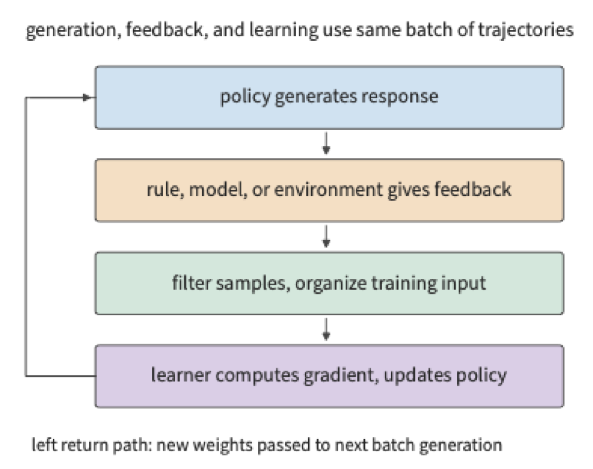
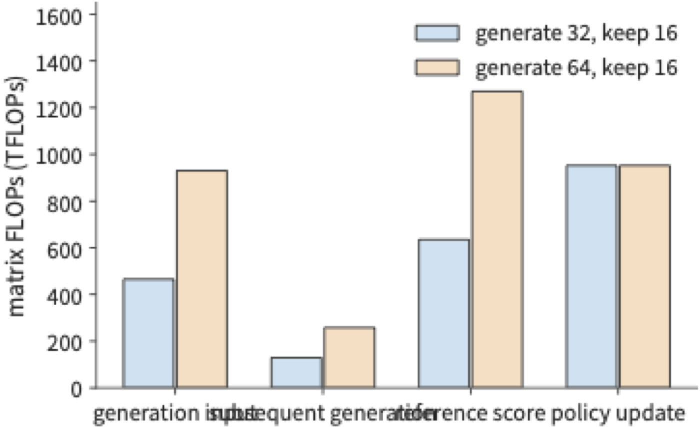
Once the update completes, the generation replicas need to obtain the new weights. With \(r\) replicas, each independently sent a complete copy of weights of size \(M_W\), the transfer volume is \(rM_W\). A single copy of Qwen3-8B's BF16 weights is about 16.381 GB, so four replicas together require about 65.526 GB. The optimizer state stays with the learner, for use in the next update; the generation replicas need only the weights required for the forward pass. Broadcasting or hierarchical distribution can let multiple replicas share part of the transmission path, reducing redundant transfers.
When allocating resources across stages, both the amount of computation and how the computation is carried out matter. Each decode step in the generation stage typically processes only one new token per request, so with small batches, relatively few tokens are processed at once; scoring and training, by contrast, can process multiple tokens of a known response together, and tool verification additionally needs CPU resources and an execution environment. Estimating the time for each stage separately, then arranging them in the order of generation, feedback, update, and weight synchronization, is what yields the complete cycle. Chapters 4 through 10 will progressively introduce the corresponding hardware and scheduling methods.
Exercise 3-7 [Core]: with the number of update samples fixed, how much extra RL cost does generating more responses add
Keep one update using 16 samples of equal length. Using the total cycle computation from Example 3-4 for generating 32 and 64 responses respectively, find the additional generation-plus-reference-model computation added per additional response generated, along with the fixed computation required for one update. Keeping the number of update samples fixed, use this to predict the total cycle computation when generating 48 responses. Then, using a teacher model with the same structure as the generation model, run one forward pass on each of the 48 responses and find the additional computation this adds. If the updated BF16 weights are sent to four replicas, each independently receiving one full copy, find the total transfer volume. Finally, draw the dependencies among generation, feedback, update, and synchronization, and identify which stages can overlap across different batches.
3.6 From Load Requirements to Training and Serving Budgets¶
3.6.1 Scaling Law: The Relationship Between Model Scale and Data Volume¶
The computation of a single update can be worked out term by term, but how many parameters to train and how much data to use requires a separate decision. Let the total training compute budget be \(C\), the parameter count be \(N\), and the number of training tokens be \(D\); the dominant computation approximately satisfies \(C=6ND\). Increasing \(N\) forces a reduction in \(D\). Choosing between the two requires knowing how parameters and data separately affect quality. The Scaling Law fits, through experiments, the relationship among model scale, training data, and loss. Below we adopt a power-law model, in which both the parameter and data terms are positive, with the training configuration and loss evaluation method held fixed:
\(L\) is the validation loss, \(E\) is the asymptotic loss, \(A/N^\alpha\) describes the effect of insufficient parameter scale, and \(B/D^\beta\) describes the effect of insufficient data volume. Here \(A,B,\alpha,\beta\) are all fitted coefficients. Increasing parameters or data alone reduces the corresponding term; but under a fixed compute budget, the two terms move in opposite directions.
Eliminate the data volume using \(D=C/(6N)\), then differentiate with respect to \(N\). The optimum satisfies
The left side is the loss reduction from adding parameters; the right side is the loss increase from reducing data. When the two are equal, a further small change in parameter count yields no net benefit. Rearranging gives:
The resulting \(N_{\mathrm{opt}}\) is a continuous value; in practice, the number of layers and the width can be chosen near it. This optimal solution only minimizes validation loss under a fixed training compute budget — it excludes post-deployment inference cost and does not consider whether the data supply is sufficient. Once a model goes into service and must handle a large volume of requests, the optimal choice may shift toward a smaller, more thoroughly trained configuration; Section 3.6.2 will use the training records of public models to check how far actual investment departs from this prediction.
The allocation exponents fitted by different studies do not agree. Kaplan et al.'s early study gives an allocation relationship of roughly \(N\propto C^{0.73},\ D\propto C^{0.27}\); the Chinchilla study, using different experiments and fitting, finds that model scale and data volume should grow at a rate closer to proportional with the budget. The first allocation increases model parameters faster; the second allocates more of any additional budget to training data. The curve and its fitted exponents therefore directly change the choice between parameters and data.37
Example 3-5: Can a fitted training-scale relationship predict the loss of a larger model? From published training records, select observations from six smaller models for fitting, and hold out the observations from two larger models. First choose a fitting method, then compare the predicted values for the held-out models against their actual observed values.
Solution: datablations is a public collection of experimental records studying how model and data scale vary; C4 is one of the text corpora used in these records. Taking eight models as an example, we fit a curve using six smaller models and hold out the two models with \(N\ge2\times10^9\) for testing. The actual losses of the two large models are approximately 2.574 and 2.337, respectively; the fitted curve predicts 2.583 and 2.363. The predictions are slightly higher than the actual values, with a root-mean-square error of about 0.0193 nats/token. A nat is the unit of information when using the natural logarithm; nats/token denotes the average loss per token. Figure 3-27 distinguishes fitting points from test points using different markers.38
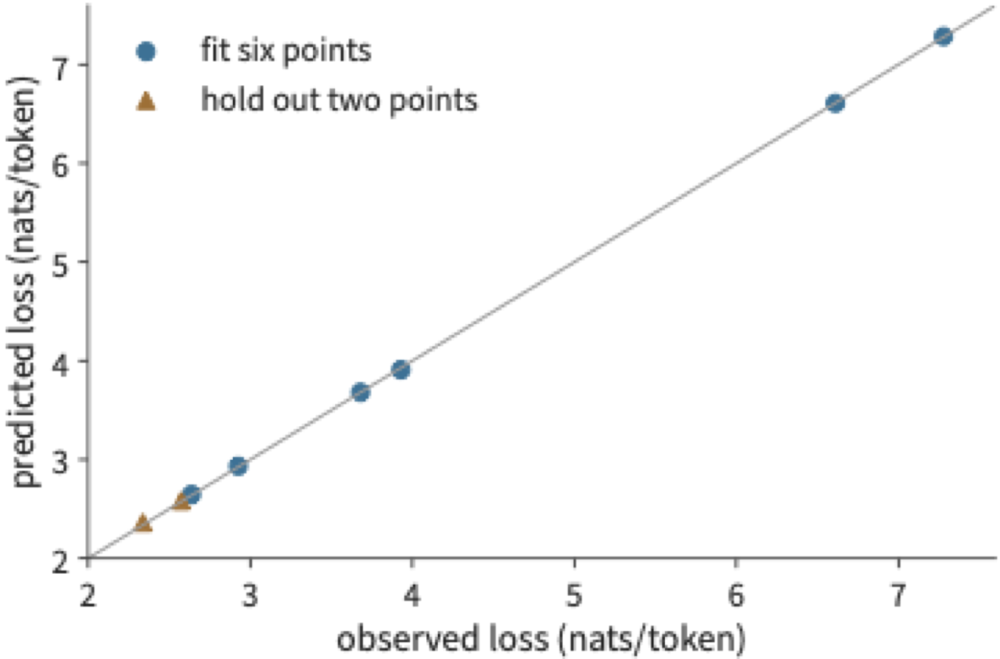
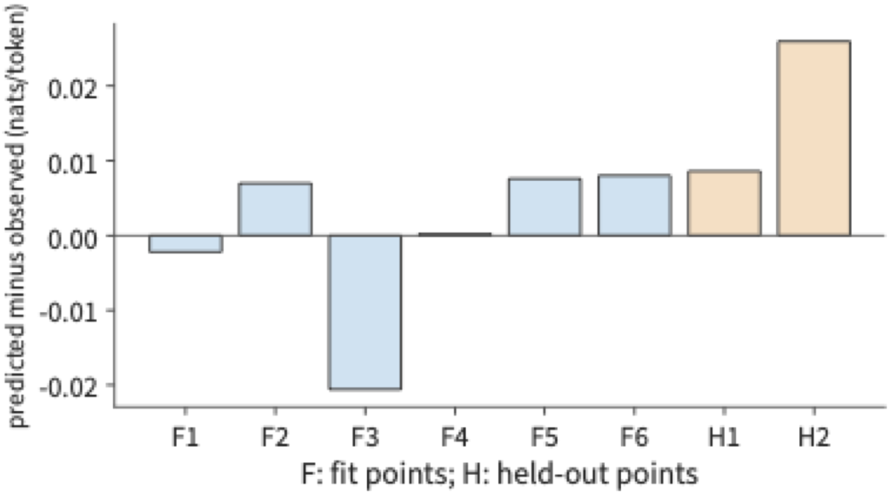
Held-out testing is necessary because fitting only guarantees that the curve stays as close as possible to the data used to derive the coefficients. Only by excluding the larger models from the fit and then comparing predicted against actual loss can we check whether this relationship can predict a new scale. Here the two errors are approximately \(0.009\) and \(0.026\); squaring them, averaging, and taking the square root yields the root-mean-square error.
After predicting the validation loss, we must still judge whether the model can accomplish real tasks. The Llama 3 report first predicts loss from the training compute, then establishes a relationship between loss and task performance.39 This way, quality requirements for tasks such as coding, retrieval, and tool use can be further translated into choices of training scale and compute.
Both fitting and prediction rest on observations from a single training run, and training itself has variance. With the same data and model scale, changing the random initialization can produce different learning curves; a larger model, when not yet fully trained, need not outperform a smaller one. Repeating training with multiple random seeds can separate the trend caused by scale change from the incidental variance of a single run.41
Long-term serving accumulates the cost of each call on top of the training budget. A smaller model can reach the target quality through longer training: more investment up front, and afterward each call reads fewer weights and performs less computation. Beyond Chinchilla-Optimal incorporates this inference demand into the analysis, covering 47 models spanning 150M–6B; among them, the 150M model reaches a training volume as high as 10,000 tokens per parameter, while the largest models reach up to 1,000.42 The training budget and the number of service calls together determine when a smaller model recovers the cost of the extra training.
Training investment and cumulative service cost under a fixed target loss. Fix the target loss for fitting at 2.9, estimate training and serving cost using matrix computation volume, then convert everything uniformly into H100 SXM GPU time (the product of GPU count and usage duration, measured in GPU-seconds or GPU-hours). Take requests with \(P=512,G=128\); the training compute is \(6ND\), and the compute per complete request is \(2N[P+(G-1)]\). The H100 SXM's BF16 dense peak is 989.4 TFLOP/s; the BF16 MFU reported for Llama 3 pretraining on H100 (defined in Section 1.2.2) is 38%–43%. Taking 40% for both training and serving, this converts to 395.76 TFLOP per GPU-second.39 The 0.1B model requires about 298.6B training tokens, exceeding the upper bound of the data volume used for fitting, so the cost chart marks this extrapolated curve with a dashed line. According to this extrapolated curve, training the 0.1B model takes about 125.7 H100 GPU-hours, which is 73.5 GPU-hours more than the 0.5B model; but each call then uses about 0.00129 fewer GPU-seconds. At around 204.8 million calls, the total costs of the two become equal. Before this point, the extra training cost paid by the 0.1B model has not yet been recovered; after this point, the cumulative savings per call exceed the upfront investment. Since training and serving are converted using the same factor, this crossover point depends only on the compute volume and is independent of the MFU value.43
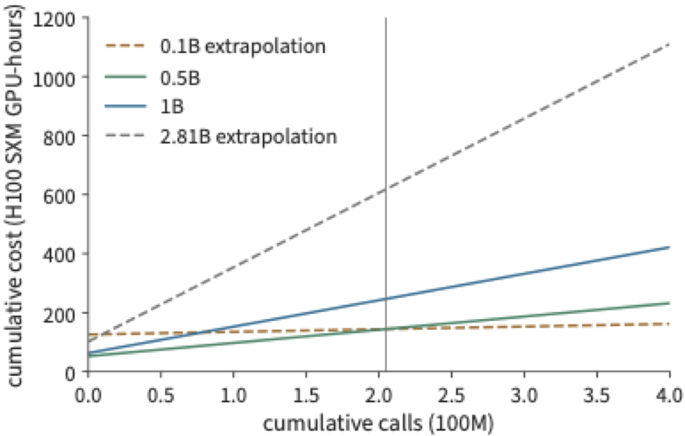
Returning to the allocation between parameters and data, we can also directly predict the outcome of an increased budget. From the optimal solution expression, \(N_{\mathrm{opt}}\propto C^{\beta/(\alpha+\beta)}\); substituting back into the compute constraint gives \(D_{\mathrm{opt}}\propto C^{\alpha/(\alpha+\beta)}\). If the two exponents are equal, a fourfold increase in budget doubles both parameters and training data. This makes the meaning of the fitted exponents concrete: the exponents determine how any additional compute should be split between the model and the data.
Exercise 3-8 [Extension]: How to allocate a compute budget between model parameters and training data
Using the loss model \(L=E+A/N^\alpha+B/D^\beta\) and the compute budget constraint \(C=6ND\), derive how the loss-minimizing parameter count \(N\) and data volume \(D\) each grow with the compute budget \(C\). Taking \(\alpha=\beta\), when the compute budget increases to four times and nine times its original value, respectively, by what factor should the optimal parameter count and data volume each increase? Then, using the eight C4 observation points from Example 3-5, fit with six of them and test with the remaining two, compute the prediction error at the two test points, and explain why the error at the fitting points cannot substitute for the error from held-out testing.
3.6.2 Training Investment from Llama to Qwen¶
The fitting in Section 3.6.1 explained how model scale and training data trade off against each other. This section uses public models' training records to analyze the training investment developers actually adopted: first comparing the number of training tokens per parameter, then separating algorithmic compute volume from training time on specific hardware.
From the stages and scales disclosed in various reports, a trend emerges: at a similar parameter scale of 7–8B, the number of training tokens has kept increasing.44
| Model and reported scope | Training tokens | Rough \(D/N\) estimate | Rough \(6ND\) estimate |
|---|---|---|---|
| Llama 1, 6.7B | 1T | 149 | \(4.02\times10^{22}\) FLOPs |
| Llama 2, ~7B | 2T | 286 | \(8.40\times10^{22}\) FLOPs |
| Llama 3.1, ~8B | ~15T | ~1,875 | ~\(7.20\times10^{23}\) FLOPs |
| Qwen2.5, ~7B, model-family disclosure | ~18T | ~2,571 | ~\(7.56\times10^{23}\) FLOPs |
| Qwen3, ~8B, model-family disclosure | ~36T | ~4,500 | ~\(1.728\times10^{24}\) FLOPs |
\(D/N\) converts the data investment into "how many training tokens correspond to each parameter." Among the roughly 7–8B dense models in the table, \(D/N\) rises from about 149 to about 4,500, showing that models with similar parameter counts can differ enormously in training data volume. Upfront training cost increases with data, while the weight capacity required per call after deployment is still mainly determined by parameter count. Consequently, a more thoroughly trained small model may increase the one-time investment while reducing long-term serving cost.
These figures also clarify the relationship between the fitting results of Section 3.6.1 and actual training investment. Under Chinchilla's proportional allocation, the compute-optimal data volume for a roughly 8B model is about 20 tokens per parameter, i.e., about 160B tokens; the actual investments in the table range from 1T up to about 36T, exceeding this benchmark by one to two orders of magnitude. The two answer different questions: fitting minimizes validation loss under a fixed training compute budget, while developers factor post-deployment serving cost into their objective, choosing a smaller, more thoroughly trained model when data supply is ample and expected call volume is large. The Beyond Chinchilla-Optimal work cited in Section 3.6.1 and the cost-crossover formula in Section 3.6.3 give quantitative conditions for this choice. Training-budget optimality and end-to-end optimality are different objectives; actual investment exceeding the former does not mean the former was miscalculated.
Longer training, data curation, distillation, and post-training are all ways of using more upfront work to raise the task capability of a model at a given scale. In the base-model evaluations of the Llama 3 model card, Llama 3 8B and Llama 2 70B score 66.6/69.7 respectively on MMLU, a benchmark of multiple-choice questions spanning many disciplines, and 78.5/87.5 on TriviaQA-Wiki, a question-answering benchmark using Wikipedia evidence.40 The differing gaps on the two benchmarks show that a deployer must set quality requirements according to its own task; only a small model that meets the quality threshold can turn the capacity and read-latency benefits of smaller weights into a serving benefit.
When analyzing large models and MoE, total parameter count and activated parameter count must be listed separately. DeepSeek-V3 reports 671B total parameters, about 37B activated per token, and 14.8T pretraining tokens; DeepSeek V4-Flash reports 284B / about 13B and 32T; DeepSeek V4-Pro reports 1.6T / about 49B and 33T. Total weights determine capacity, while activated parameters only provide a rough estimate of compute volume. The three projections of DeepSeek V4-Flash's backbone experts can be computed separately:
Here \(n_L\) is the number of backbone layers, \(h\) is the hidden dimension, \(f\) is the expert intermediate dimension, and \(k_{\mathrm{routed}}\) and \(k_{\mathrm{shared}}\) are the number of routed experts and shared experts selected per token; the coefficient \(18=3\times2\times3\) corresponds in turn to the three projections, 2 FLOPs per multiply-add, and the forward-plus-backward total being three times the forward pass. DeepSeek V4-Flash's backbone experts total about 45.4495 GFLOPs/token, accumulating to about \(1.45438\times10^{24}\) FLOPs over 32T tokens; DeepSeek V4-Pro is about 169.2465 GFLOPs/token, accumulating to about \(5.58513\times10^{24}\) FLOPs over 33T tokens. A full training step's compute is jointly composed of these expert matrices together with attention, routing, MTP, the optimizer, and recomputation. The reported loss weights are also not execution proportions — for example, an MTP weight of 0.3 does not mean only 30% of the auxiliary computation is executed.25
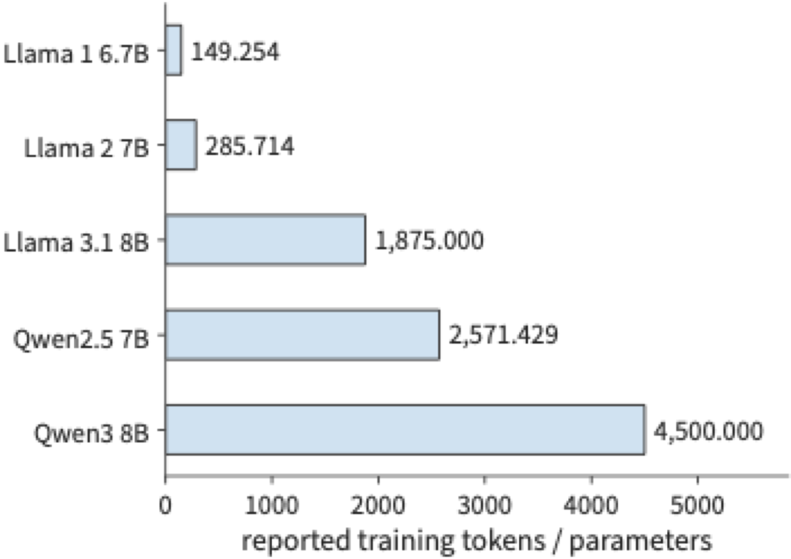
Exercise 3-9 [Extension]: How do increasing training data or the number of experts change resource requirements
Recompute \(D/N\) and \(6ND\) from the Llama/Qwen table. If the parameter count stays fixed and the training data volume increases fourfold, predict how the training compute and the post-deployment pure weight capacity each change. For MoE, explain whether, when the total number of experts doubles while the number selected per token stays the same, both the parameter capacity and the expert training compute can be estimated as doubling.
Besides compute volume, training investment is also commonly measured in GPU-hours. If \(n_{\mathrm{GPU}}\) cards are used continuously and the total GPU-hours is \(H_{\mathrm{GPU}}\), the actual calendar time is
Training Llama 1 65B consumed 1,022,362 A100 GPU-hours. Using 2048 cards continuously, this corresponds to about 499.2 hours, i.e., 20.80 days; using only half that many cards at the same accelerator efficiency would require about 41.60 days. GPU-hours reflect total investment, while the card count determines how much actual time is needed to complete that work.
The DeepSeek-V3 report gives 2.664M H800 GPU-hours for pretraining; the 14.8T tokens correspond only to the pretraining stage. Using 2048 cards continuously, this would take about 54.20 days. Context extension and post-training afterward have their own usage figures, but the different stages cover different scopes and cannot simply be divided together by the pretraining token count.44
Converting GPU-hours into actual calendar time requires dividing by the number of cards used concurrently over the same period. For Llama 3.1 405B, taking the publicly reported 30.84M H100 GPU-hours and assuming this work used the full 16,384-card scale throughout, the actual calendar time is about \(30.84\times10^6/(16384\times24)\approx78.43\) days. If a given stage uses fewer cards, the same number of GPU-hours requires more calendar time; the timing of training resource allocation therefore determines when training finishes.
The usage figures above come from three different accelerators, so GPU-hours cannot be directly compared in scale of investment across devices. Converting by BF16 dense peak compute: A100 80GB is 312 TFLOP/s, and H100 and H800 are both 989.4 TFLOP/s (the H800 only has lower interconnect bandwidth); one H100 or H800 GPU-hour is thus equivalent to about \(989.4/312\approx3.17\) A100 GPU-hours. Figure 3-31 converts three sets of public usage figures uniformly into A100 80GB equivalent hours; this conversion assumes similar actual utilization across devices, and is intended for comparing scale of investment, not for indicating differences in efficiency or cost.
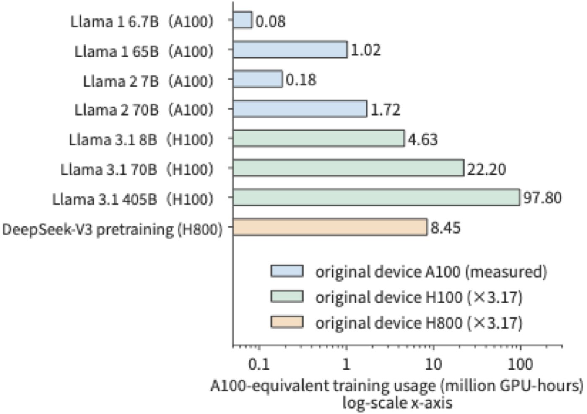
All the usage figures above pertain to pretraining; post-training investment can likewise be compared using GPU-hours. Table 21 of the Qwen3 technical report lists the RL and OPD post-training routes for the same 8B model side by side, with investments of 17,920 and 1,800 GPU-hours, respectively. The two routes are mutually exclusive alternatives, each involving generation, feedback, and learning work. Mapping GPU-hours onto specific stages and accelerators, and then combining this with the execution process of each stage, lets us explain where the training investment is chiefly consumed.
3.6.3 End-to-End Cost Under Quality Requirements¶
We now bring together the analysis of Chapter 2 and this chapter. Model structure determines the storage capacity, compute volume, and read volume required per call; workload determines the number of calls and the waiting involved; training determines the investment made before going live. Let the upfront cost of model \(m\) be \(C_0(m)\); suppose there will be \(Q\) future tasks, with task type \(j\) accounting for a fraction \(w_j\) and an average cost per completed task of \(c_j(m)\), so that
Before comparing, all models must meet the same quality, deadline, and completion conditions. If success rates differ across models, \(c_j\) must also include the cost of failures and retries; assumptions about price changes, model lifetime, maintenance, and discounting should also be stated when giving a budget. If specialized hardware requires a longer deployment cycle, how long a model version can remain in use also becomes a condition of this choice.
Consider two models, both satisfying task quality and deadline requirements. If the smaller model requires an additional training cost of \(\Delta C_0\), but saves \(\Delta c>0\) per successful task, the call volume at which the cumulative costs become equal is
If the smaller model requires 100,000 additional H100 GPU-hours of training, i.e., \(3.6\times10^8\) GPU-seconds, and saves 0.72 H100 GPU-seconds per task, then \(Q_*=3.6\times10^8/0.72=5\times10^8\), i.e., five hundred million tasks. If expected demand is below this number, the extra training cost has not yet been recovered; above it, the smaller model accumulates greater net savings. Capacity, latency, quality, and call volume together determine the choice; looking only at model size or per-token price cannot settle this judgment.
Exercise 3-10 [Extension]: Training completion time and cumulative serving cost
Suppose completing training requires a total of 1,022,362 A100 GPU-hours, the public usage figure for Llama 1 65B. Using 2048 and 1024 A100s continuously, respectively, and assuming the total GPU-hours stays unchanged as the accelerator count changes, find the number of days required to complete training under each configuration. Then compare two models that both satisfy the same quality and deadline requirements: the smaller model requires 100,000 additional H100 GPU-hours of training and saves 0.72 H100 GPU-seconds per successful task. When expecting to complete two hundred million and one billion successful tasks, respectively, which model should be chosen in each case? Compute the total cost difference, and explain where the choice would reverse if the actual task volume changes.
Later chapters will use the three categories of workload information organized in this chapter. The table below lists what must be recorded for each category of workload, and which system design questions this information will later serve.
| Workload | Fields that must be retained | Later use |
|---|---|---|
| Chat/Agent | Task check, model and version, per-round input/hit/output, arrival, tool dependency, branching and reuse interval | Chapter 8 arranges batching and state; Chapter 9 handoff and routing; Chapter 11 manages tool environments |
| Vision/Real-time | Original image bytes, \(\mathrm E/\mathrm P/\mathrm D\), EC/KV, frame or chunk arrival, first-response/continuous-playback requirements, computation no longer needed after interruption | Chapters 8–9 arrange encoding and handoff; Chapter 12 factors in the link and execution location |
| Training/RL | Data and quality, length and labels, micro-batch/update, number of generated samples/retained samples, reward computation and model invocations, weight version, deadline | Chapters 4–7 analyze compute, storage, and communication requirements; Chapter 10 arranges learning; Chapter 11 configures environments and resource pools |
All three examples show that describing a workload requires recording the specific execution process. In the two-minute request example, the ratio of input to output at each time interval determines when backlog appears; in the code agent, tool dependency determines waiting time and how long state must be kept; in RL, the number of samples before and after filtering determines how much data the generation and update stages each process. Only by capturing this information can resources be arranged for each stage.
Chapter 4 will combine a chip's compute power, storage capacity, and bandwidth to analyze how these workloads execute on accelerators. The matrix sizes, state sizes, and access counts computed in this chapter will be used to judge how long computation takes, whether the data can fit, and whether reads and writes can complete in time. The dependency relationships among stages then determine which work can overlap and which must wait.
Fallacies and Pitfalls¶
Fallacy: if the average request rate and length are the same, the workload is the same. A small number of extremely long requests, the combination of input and output lengths, and the arrival order of requests all affect resource demand within a short time window. In Example 3-1, capacity is sufficient for the average arrival volume, yet a backlog still builds up in the following minute.
Fallacy: if the per-token price drops, the cost per successful task drops too. Extra thinking, answers that fail checks, and tool and environment costs should all go into the numerator, with the count of qualifying tasks in the denominator. A batch with zero successes can only report consumption and failures — it cannot estimate the cost per success.
Fallacy: if the total number of training tokens is the same, the system workload is the same. Sequence distribution changes the number of attention query-key pairings, label and vocabulary-head strategy changes output work, and the number of updates changes optimizer cost; RL additionally incurs generation and feedback overhead for responses that are not adopted.
Fallacy: the compute-optimal scale derived from fitting a Scaling Law is the scale that should be adopted for training. Compute optimality holds only under a fixed training budget that excludes inference cost. The per-parameter training token counts of public models exceed this baseline by one to two orders of magnitude, a choice made once long-term serving cost is folded into the objective; a different objective function does not mean the fitted result has been overturned.
Code Task Trace¶
The task is to fix an interval-merging function so that nested intervals and intervals whose endpoints touch merge correctly, without modifying the input or its nested lists. The model can read the specified file, rewrite it, run a fixed test, and end the task; the controller does not modify the code on the model's behalf. With thinking mode off, the model reads the file once, rewrites it five times, and runs the test six times within 12 rounds, still without completing the task; with thinking mode on, the four rounds consist of output truncation, writing the file, running the test, and ending the task. The waiting time produced by the first-round truncation is likewise counted into the total task time.11
Chapter Summary¶
The workload of a continuously running service depends both on how much work each request requires and on when requests arrive and what dependencies exist between steps. Average rates give a rough estimate of the resources needed; analyzing short-term backlogs and state residency time reveals resource pressure that averages do not capture. Multi-turn tasks additionally involve tool waiting and failed attempts, real-time tasks must ensure data arrives on time, and training adds backward passes, parameter updates, and weight synchronization.
When comparing the resources and cost of different schemes, the same quality requirements and task completion criteria should be applied. Scaling Laws provide a testable statistical model for training allocation, while long-term serving demand can change the choices made for upfront investment. Core Exercises 3-2, 3-4, and 3-7 apply these methods respectively to continuous requests, interactive tasks, and the RL loop.
-
Chapter 2, Model Architecture, request invocation conventions in §2.2 and Qwen3-8B KV counting; request calculations for four models. ↩
-
2023–2026 token cost survey, §2, §4, §11; API pricing, production cost, and cost per successful task are kept separate. ↩↩
-
ServeGen, NSDI 2026, §2–7; notes on source materials and code reading. ↩
-
Request distribution and provisioning, stage requirements after correcting for the two-minute fixed input and first-token effects; decode bandwidth lower bound for 64 sequences on RTX PRO 6000, with an average context of 2742 tokens. ↩
-
Exercise 3-2: real two-minute replay, complete input, send and completion logs, KV sampling, and the run scope. ↩
-
Context organization and Agent case, linking Chapter 2 of the author's AI Agent book with the experiment records. ↩
-
Exercise 3-3: 1024 budget and 4096 budget; theoretical background in Test-Time Compute. ↩
-
Diagnostics with thinking mode off, recording results scored against the predetermined criteria, results obtained by extracting the answer from the output after the fact, and observation data from concurrent processes. ↩
-
Exercise 3-4: two code agent traces, including independent checks and an additional aliasing condition. ↩↩↩
-
TypeSafe AI homepage, pricing and the side-by-side demo; the launch post includes the founder's own account and describes parallel sampling, RLCD and the evaluation method; the API documentation states that questions are evaluated in parallel against the same state. ↩
-
Beyond Binary Rewards: Training LMs to Reason About Their Uncertainty, the RLCR reward in §3. ↩
-
Execution paths and pricing comparison for the decision request, including the V4.1 Flash full-layer path, the LLM path with 512 output tokens, and the DeepSeek price table; reproduce with
python3 calculations/calc.py decision-request --format md; the 2 dollars per GPU-hour figure from the DeepSeek inference system overview; DeepSeek models and pricing. ↩ -
Bytes, state, and stage placement for multimodal input, with a fixed Qwen3-VL-4B configuration, preprocessing, and full DeepStack EC. ↩
-
Generative model sourcing and execution paths; Omni audio, Fish audio, FLUX image, H3 video, Wan video. ↩
-
Notes on training computation, linear layer forward and backward passes, sequence distribution, and DeepSeek V4-Flash per-expert computation. ↩↩↩
-
Qwen3 technical report, the three-stage pretraining in §3.2 and the post-training branches in Table 21. ↩
-
Supplementary training non-matrix computation, measured separately from the 8K variant. ↩
-
DeepSeek V4-Flash online compressor, attention backward pass, single-layer MoE training, mHC wrapper backward pass, optimizer grouping. ↩
-
DeepSeek V4 report, domain experts and multi-teacher OPD in §5.1, teacher scheduling, rollout, and sandboxing in §5.2. ↩
-
Experiment 10-8: fixed minimal verl training pipeline. This chapter uses this experiment to distinguish task quality from parameter updates; the organization of the complete system is covered in Chapter 10. ↩
-
Loss normalization and parameter update process for the fixed verl training configuration, tied to the original configuration, source code, and exported tensors. ↩
-
Lowering the sample retention ratio while keeping the retained sample count. ↩
-
Kaplan Scaling Laws, §6; Chinchilla, compute-optimal allocation and fitting method. ↩
-
Public C4 eight-point fit, with source logs, exclusions, and four sensitivity items preserved alongside the report. ↩
-
Llama 3 report, training budget, loss prediction, and downstream task performance; §3.3.2 and Table 4 give 38%–43% BF16 MFU on H100. ↩↩
-
Meta Llama 3 model card, the Llama 3 8B and Llama2 70B columns in the Base pretrained models table. ↩
-
Exercise 3-8: six small-model training runs on fixed text, preserving checkpoints and complete results for two seeds. ↩
-
Beyond Chinchilla-Optimal, ICML 2024 camera-ready, inference demands, experimental scope, and long-training extrapolation. ↩
-
Lifecycle cost estimated from the C4 fitting results, costs computed in H100 SXM GPU-seconds. ↩
-
Notes on training investment and Scaling Law history and recalculation with published fields locked in. ↩↩
-
DeepSeek V4.1 official technical report, Sections 1, 2, 3, and 6; fixed conditions and recalculation across chapter sessions. ↩